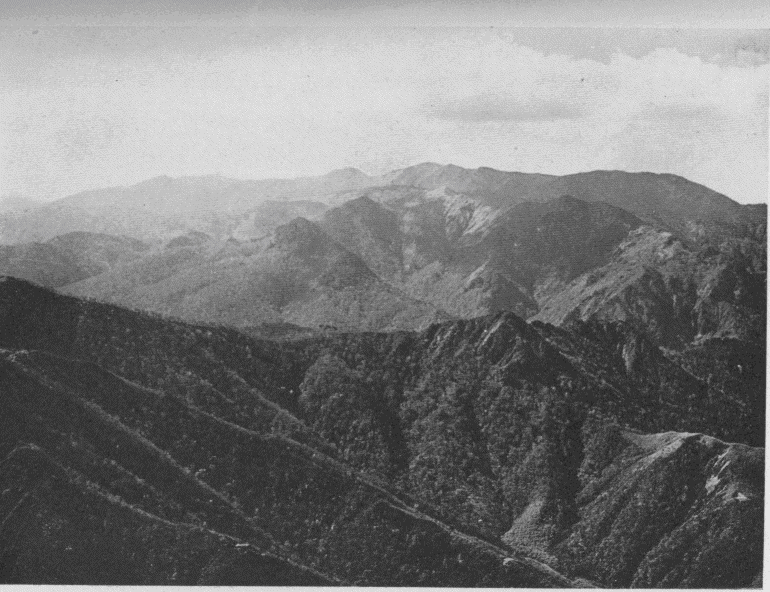
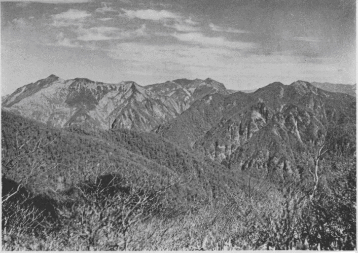
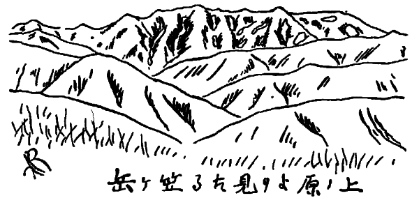
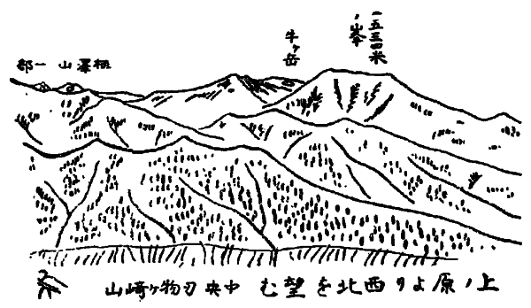
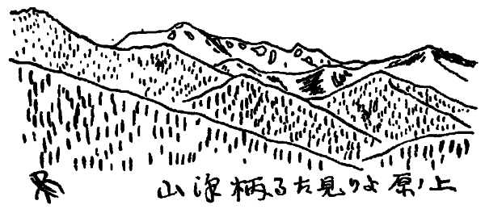
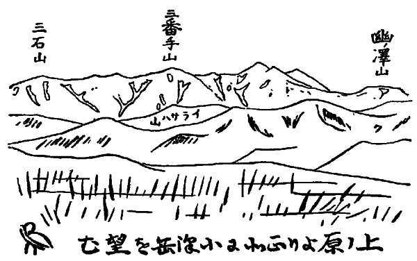
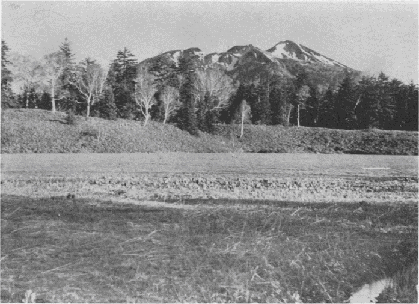

| 利根川水源地の山々 | |
| 木暮 理太郎 | |
| (2015) | |
利根川水源地の山々
木暮理太郎
水源地の記文
ここに利根川水源地というのは、大略西は宝川笠ヶ岳の支脈と、東は武尊
山の支脈とに依りて限られた利根川上流の地域を指したものである。此
地方の山は割合に高度が低いので、谷は深く木立は繁っているにも拘
らず、人目を惹くことが少ない許
りか、反
て夫
が為に人を遠ざからしめる傾
がないでもない。私の知っている限りでは、古来此地方に関する記行文としては、僅
に『上野藤原温泉記行』と「利根水源探検紀行」との二編を有するに過ぎないのを見ても、探訪の人が稀であったことが分るであろう。この中
前者は天保十三年に宝川温泉へ湯治に行った時の記行であって、著者は不明であるが、文中に「かの処は上のしろしめす土地なれば」とあるので、当時此地の領主であった沼田の土岐家の人であったことが察せられる。弥生の十八日（高頭君編著の太陽暦年表に拠
れば陽暦四月二十八日）に江戸を出発して其日は桶川泊。十九日は境（伊勢崎の東南一里半）、二十日は赤城山西麓の溝呂木に泊って、二十一日の昼頃に森下に着いた。然
るに片品川が雪しろ水で渡船が出ない。止むなく其
日は森下に逗留し、二十二日森下から二里半許
上流の生越の先で川が二岐している所に架した橋を渡って沼田に入り、荷物の着く迄滞在。二十六日沼田を出立、高日向にて銚子橋を渡り、利根川の右岸に沿うて沼原大穴の二村を過ぎ、湯檜曾橋を渡り、夜後橋にて利根の左岸に移り、西橋にて再び右岸に出で、山路の残雪を蹈んで、其日の夕暮終
に宝川温泉に到着した。「沼田より遠く雪のみへし山も次第に近くなり、つひに雪の消残る山のふもとをよぢいる也」など、昔の人の山に入る心持がよく顕
れている。道中はすべて駕籠に乗ったようである。此処
に一ヶ月ほど滞在して、其間に見聞したことや地方の有様などを筆に任せて書き付けてあるが、参考とす可
き有益の資料に乏しくない。後者は明治二十七年九月に群馬県師範学校教諭渡辺千吉郎氏が利根川水源の探検を企て、一行十数名と共に二十一日湯小屋を出発して大芦に出で、矢倉橋を渡りて利根の右岸を遡り、其日は湯の花附近の河原に野営。二十二日西仙ノ倉沢を過ぎて利根の左岸に移り、午前十時水長
沢の合流点に達し、利根川の本流を左に見て、其儘
真直
に水長沢に沿うて進んだ。一里許り行くと河床が辿れなくなる。右岸の山腹を攀じ、途中一泊して二十三日に井戸沢山脈の一峰に登ることを得た。此処から初めて利根川が幽谷の間に白練を布
けるが如く流れているのを下瞰し、其奥に大利根岳の突兀
天に朝するを望み、水源探検の目的殆ど爰
に終れりとし、再び水長沢に下りて之
を遡り、上越国境山脈を踰
えて尾瀬に出ることに決し、途中二泊して所謂
文殊岩を発見したる後、二十五日午後に至りて漸く尾瀬ヶ原に達し、夫より戸倉に出で、二十九日沼田に帰着した当時の実況を詳細に記述したものである（明治二十八年一月発行の『太陽』第一巻第一号所載「利根水源探検紀行」参照）。これも有益な資料であるには相違ないが、山や谷の名称も模様も極めて纔
に紹介されているのであるから、読過一番思ったより得る所が少ないのは是非もない。それというのも人夫の大部分が藤原の者でなく、且
好案内者を伴わなかった結果である。
私が此地方に始めて足を蹈入れたのは、渡辺氏の一行に追蹤して尾瀬に出た時であるが、今にして其当時を回想するも何一つ記憶に存しているものが無い。岩を攀じたり流
を乱したりすることに満身の興味を覚えて、人の導くが儘に黙々として足を運ぶ初心の年少登山者に、元より何等観察眼などある可
き筈もなかった。
大正九年の夏になって、日高、藤島の二君と利根の奥に行こうではないかということに話が纏った。藤原の小学校や其地唯一の旅舎である柳淀の主人に照会して、山地の形勢、登路の有無、人夫の賃金其他を問合せるなど、一人で骨折って呉
れた日高君が、愈
七月十日の夜に出発しようとする数日前になって、急に都合が悪くなって同行を断られたのは遺憾であったが、兼
て此方面に注目していた武田君が一行に加わることになった。三人は七月十七日の夜行列車で上野駅を出発して、翌十八日高崎駅に下車し、夫より電車の便を借りて沼田に至り、沼田から自動車で小日向に行き、此処で藤原へ戻る馬を頼んで荷物だけを運ばせ、三人は空身でぶらぶら歩きながら、其日の午後六時というに打上の柳淀に着いた。尤も武田君は早く帰京しなければならぬ事情があったので、私達は最初に至仏、笠品
及
武尊の三山に登り、其後藤島君と私とは利根の奥へ出発することに極
めて、先ず至仏山へ登る目的で十九日に湯之小屋へ出懸けた。然るに案内を頼もうと思った湯屋の主人の強慾に呆れて、残念ではあったが登山を中止し、翌二十日柳淀に帰ると直
に準備を命じ、藤島君と私とは二十一日に予定の旅に上り、武田君は宝川笠ヶ岳に登った後、玉原越
を経て帰京の途に就かれた。私達は初
の考
とは多少計画を変えて、利根川水源地の登山の第一歩を小沢岳に向って投ずることにした。そして二十三日の午前十時過に漸く其頂上に攀じ登ることを得た。夫からは上越の国境山脈を辿り、露営四泊にして二十七日午後三時大白沢山の一角に達し、猫又川を下りて貉
沢から至仏山に上り、ヘエヅル沢を下って二十九日に柳淀に帰着したのである。
上述のような次第で実際私の跋渉した部分は甚だ少く、其余の宝川笠ヶ岳から小沢岳に至る上越国境山脈や、片品水上二村の界をなす山脈及この両山脈から派出する幾多の支山脈に就ては、更に知る所がないというてよいのである。是等
は他日蹈査の上増補する考であるが、其中の若干は地誌や絵図の類に拠って、其梗概だけでも述べて置くことにした。
水源と文殊岩
利根川の名は早く既に『万葉集』に顕
れているが、其
水源に就て多少なりとも説明の筆を下しているものは、恐らく『義経記』が最初ではあるまいか。『義経記』の著者は不明である、従って著作の年代も知ることを得ない。されど大略足利時代の初期の作であろうという説が一般に信じられているようである。
爰に坂東に名を得たる大河一つあり、此河の水上は上野国利根の庄藤原といふ所より落ちて水上遠し、末に下りて在五中将の隅田川とぞ名付けたる。
利根川がまだ東京湾に注いでいた頃で、其時は荒川も今の元荒川の水路を流れて、越ヶ谷附近で利根川に入り、荒川の現水路は入間
川の河身であったから、末は在五中将の隅田川というたのである。尭恵法師の『北国記行』にも「利根入間の二川落合へる所にかの古き渡りあり」と書いてある。是等
の記事は利根川流域の変遷を研究するには貴重なる材料であるけれども、其水源に関しては、藤原の如何なる場所から発源しているか、一向に知ることを得ないのである。
徳川幕府の中世以後になると、利根川は利根郡文殊岳の幽谷より発すとか、又
は藤原村の山中に文殊岩なるものがあって、形が文殊菩薩に似ている。其乳から滴り落つる水が利根川の源であるというような記事が諸書に散見する。『利根川図志』や『江戸名所図会』なども此
例である。其等
の中
のどれが利根川の水源と文殊とを結び付けた最初の記文であるか、精しく調べては見ないが、出所は一つであって、それが各書に引用されたものに相違ないと想うのである。藤原村の伝説に拠
ると、今から百四、五十年前に利根川を遡って、文殊菩薩の乳頭から滴り落つる水が利根川の水源をなし、附近は光明焃灼として輝いているのを見た者があるとのことである。安永三年の自序ある『上野国志』には、文殊のことは少しも書いてない所から推すと此伝説の起源は其以後のことであろう。文化六年の自序ある富岡正忠の『上野名跡考』にも、亦
文殊のことは載せてない。
刀禰川は（刀寧川に作るは唐文字によるなるべし）利根郡富士山の西に出づ、始はわづかに此辺の列岳雫流落て、吾妻・利根の堺目をくだり、小川・月夜野に至て、又藤原谷の澗水をまじへ、云々。
赤谷
川を以
て利根の本流に擬したことは、何とも合点の行かぬ次第であるが、利根の水源が其当時未だ文殊と結び付けられていなかった力強い傍証とはなろう。
然
るに文化初年の述作である『武蔵演路』の利根川の条には「或抄に云」として次の記事がある。
かつしか郡の中に大川有、太井川と云ふ、川の西を葛西の郡といふ也。案るに利根川也。此川上は筑波根のみなの川にて、其源常州文殊ヶ岳より落始るを以て、智恵利根の意にて利根川と名付。太井川とは大河なるゆへなるべしと云々。
太井
川（現在の江戸川）と利根川とを混同し、且
利根の川上は筑波根
のみなの川で、其源は常州
文殊ヶ岳より落始
るなど、まるで痴人か狂人の語るを聞くに似た記事である。其当時に在りても少しく地理に通じている人の耳には、可笑しく響いたに相違なかったであろう。残念な事には「唯或抄」とのみあって、書名が記載してないのみならず、其年代をも知ることを得ないが、『武蔵演路』の著者が余り重きを置いていない所から推して、勿論立派な著書と称す可
きものではないらしい。同じ文化初年の作でありながら、一は文殊の名が見え、一は之
を欠いていることは、都会は地方に比しておのずから見聞の範囲が広く、且其機会に恵まれている為でもあろうが、一面には又其説が生れてまだ間もないことを示しているものではあるまいか。夫
は兎
に角
、私の考
ではこれが利根と文殊とを結付けた最初のものではないかと想う。そして文殊ヶ岳から発源するので、智恵利根の意から利根川と名付くとあるけれども、利根川は古くからの名であって見れば、これは寧ろ本末を顚倒したもので、利根即智恵の意から、利根川の源を文殊菩薩に附会したものとするのが適切であろう。斯
う考えると利根川水源と文殊との関係は、頗る眉に唾す可き体のもので、或は気まぐれな坊さんなどの戯談から、前記の伝説までも生じたのではなかろうか。「利根水源探検紀行」に於て、渡辺氏は所謂
文殊岩なるものを発見したりとなし、
愈遡れば愈奇にして、岩皆凡ならず、右側の危峰を超へて俯視すれば、豈図らんや渓間の一丘上、文殊菩薩の危坐せるあり。百二十年以前に見たる所の人ありと伝ふ所の文殊岩は即ち之なり。衆皆拍手喝采して探検者一行の大発見を喜ぶ。直に丘下に到りて仰ぎ見れば、丘の高さ百尺余、天然の奇岩兀として其頂上に立ち、一見人工を加へたる文殊菩薩に髣髴せり。傍に一大古松あり。鬱として此文殊岩を掩へり。丘を攀登して岩下に近づかんとするも嶮崖頗る甚し。小西君及余の二人奮発一番衆に先つて上る、他の者次で到る。岩に近づけば菩薩の乳頭と覚しき所に一穴あり。頭上にも亦穴を開けり。古人の所謂利根水源は、文殊菩薩の乳より出づとは、即ち積雪上を蹈み来りし際、雪解けて水となり此乳頭より滴下せるを見たるを云ふなるべし。され共水源を以て此処に在りとするは非なり。
と書
れているが、私はそれを多少仏体に似た岩を偶然発見したものと見做
して、どうも此岩を古く見た人がある為に伝説が生じたとは信じ兼ねるのである。
維新後になっても此伝説はまだ相当に勢力があったものと覚しく、之に拠った地誌もある程であった。明治十二年編纂の『郡村誌』藤原村利根川の条下には、
本村ノ北方駒ヶ岳（一名文殊岳）ヨリ水長沢ヲ出ス。三渓山中ニ合シ、十五里許ニシテ利根川ニ入ル、世人是ヲ利根川ノ源トス、大ニ誤レリ。此ノ三条ノ内何レノ一条カ文殊岩ノ乳ヨリ滴ルモノアリ。古来往々突尋スルモノ得テ見ルモノアリ、得テ見ザルモノアリ。草木ヲ分ケ嶮岨ヲ渉ルニ方位ヲ失シ、竟ニ何ノ渓タルヲ知ル能ハズ。蓋シ利根ノ本根ハ古来見究タルモノナシト云フ。
又水長沢の条には、
三流沢トモ云。源ヲ三所ニ出ス。一ハ戸倉村尾瀬ノ界笹分峰ヨリ出シ、一ハ尾瀬ノ石坂ノ西脊ニ出シ、一ハ中手山ノ北端ニ出ス、之ヲ三弦ト云。皆数ヶ所ニ瀑布アリ。下流合シテ岩崖ノ渓底ヲ漲リ、西下シテ利根川ニ入ル。長拾四里幅拾三間。三渓ノ内源ヲ文殊岩ニ発スルモノアリトイフ。
というている。所謂駒ヶ岳は『上野国志』に拠れば、「駒子山の東越後界にあり、越後にては白沢岳と云」とあって、陸地測量部発行五万分一図（藤原図幅）の白沢山或は大白沢山に相当しているようであるが、戸倉村の書上では景鶴
山の一名を駒ヶ岳というのである。これは藤原村の当事者が実地を知らないで、伝聞の儘
を書いた為の誤
であろう。此記事から見ても文殊岩の頗る曖昧なるものであることが明かであると同時に、利根川の水源が文殊に結び付けられるに至った訳は、それこそ文殊の智恵を借りなくとも合点が行くようである。
以上は主として利根川の水源に関する記文に就て述べたのであるが、水源地の山岳の古い記録も、元より不完全であり少数ではあるが保存されている。例せば『正保図』や『上野国志』などがそれである。天保以後になると更に其数は増加するが、根本の図書は一つか二つであるから、著者は異っていても其記載する所は殆ど同じであって、新
に得る所のないのが常である。今は其等に就て一々説明することを避け、私の蹈査の及ばない部分を補う材料として、後に必要に応じて引用する際に比較研究して見たいと思う。
河と山脈
清水街道の湯檜曾
から岐れて藤原へ行く二里余の道は、始終利根川に沿うている。粟沢の部落を通り抜け、柿平を過ぎて夜後
に近づくと、川は引括
られたように狭くなって、殊に夜後橋の下では纔
に四、五尺の幅に蹙められている。タデソリ（又
はタデスリ）ノセンというのは幅一間あまり高さ四、五尺の人工の瀑で、其
下は深い淀が一、二町許
りも続き、この上流へ来ても驚く程水量の豊富である利根の水が暗緑に沈んで渦を巻いたり、声を呑んで冷くグラグラ煮え返りながら、最後に大淵の物凄い瀞
からサッと溢れて、急瀬に白泡を立てて走り下って行く。河の中に突き出した巌の上に立って眼を上流に放つと、おもしろい形をした巨岩が或は横に蟠
り或は縦に峙
って、両岸に高さ二丈許りの崖を連ね、崖上には大樹枝を交えて鬱蒼として河を掩うている。鱒
がこの瀑を超えようとして跳び上る所を素早く掬い取る為に、漁夫が手網を持って岩蔭に待っている。私達が遊んで居る間にも二度許り網の閃くのを見た。此外にも上流には柳淀、追淀、石上淀などがある。旅舎の林忠七方は柳淀に近いから其名を屋号としている。西ノセンは横山から西へ渡る西橋の上手にあるもので、全川が河床を斜に高さ五、六尺の瀑をなしている。此処
でも鱒が盛
に獲れるそうである。又立岩
といって黒部の東鐘釣
山を一方から望んだような高い絶壁を対岸に仰ぐのも柿平と夜後との間である。此
あたりは峡勢頗る窄迫して、げに藤原に入る関門と謂
うてよい。此処を過ぎてから畑のみか田までが村里のように開けていようとは、誰も想像せぬであろうが、夜後橋を渡ると右側の山が脚を投げ出した形に身を退けて、広袤
二里に余る山ふところの諸所に、一かたまりの部落が点在して、青々とした水田を見るのに驚くであろう。そして其水田の向うに多量の残雪を額にも谷間にも白く輝かした山を見るに到って、一層の驚きと共に抃舞
して喜ばない者があるであろうか。
元来奥上州、殊に利根川の水源地を囲む山の中には、二千米を超えているものは誠に少ない。最高位を占むる至仏山でさえ二千二百二十八米一にしか達して居らぬ。其他は二千百五十八米三の武尊山、二千百三十九米六の平
ヶ岳、二千五十七米五の笠ヶ岳を除けば、余は皆二千米以下の山許りである。尤も千九百米を超えているものは十余座を数うることを得るが、兎
に角
高度に於て秩父はさて措き、日光火山群にすら遥
に劣っているに拘
らず、これが二千米前後の山であるとは如何しても思われない、少なくとも二千六、七百米の山脈を望むの感がある。其中でも利根川の右岸即ち西側に在るものは、越後の駒ヶ岳や中ノ岳から清水峠に連る所謂
清水山塊の大部分をなす長大な山脈であって、飛驒山脈でいえば立山山脈に当るものである。冬季日本海上を掠めて来る西北の風は、悉
く其水蒸気を拉し来って、先ず立山山脈に多量の雪を降らすのと同様に、此山脈に多量の雪を降らすので、利根川の左岸即ち東側にある後立山山脈に比す可
き平ヶ岳や至仏山及
武尊山等を連ねる山脈よりも、高さは低いが積雪の量は余程多いからして、北寄りの平ヶ岳に辛うじて少量の雪を認め、至仏山や其の東北に在る附近第一の高峰二千三百六十米を超えた燧
岳にさえ、恐らく雪の片影を止
めざる八月盛夏の候も、尚
お谷という谷は殆ど全部雪渓をなしている。其壮観は蓋
し松本平から仰望した常念山脈を凌ぐの概がある。就中
駒ヶ岳から中ノ岳に至る連嶂は、崔嵬
たる山容と雄渾
なる峰勢と相俟
って、槍穂高の山塊を想起せしむるものがあるのみでなく、北又川の上流に面して多数の雪渓を懸け連ねているので、枝折
峠から北又の谷に下り込んだ石滝橋の附近から西望すると、宛として上河内
の渓谷から眉に迫る大山岳を瞻仰
するの観がある。よしこれは少しく比較の埒外に逸出した言葉であるとしても、中ノ岳の南方に発源する栃木沢の上部の如きは、細いながらも二十余町の雪渓が続いているのを見た。下津川山の西北に在る佐具利
山（仮称）なども、高さは千八百米にも達しないが、東北側に懸る二条乃至
三条の雪渓は、孰
れも十余町に亘
るであろう。奈良沢の支流幽ノ沢の如きも、魚留ノ瀑から上は、幽沢山と小沢岳とを連ねる最低の鞍部の直下まで雪渓の来ていることを後に知って、ひどい藪潜りをしながら尾根を登った不覚さを悔いた程である。此等は僅
に二、三の例を挙げたものに過ぎないが、雪量の多いことはこれ丈
でも推察することを得ようと思う。惜
い哉
山が低い為に、この雪は昼夜共に溶けているから、十月中旬初雪の降る迄には、大部分は消失するであろうけれども、九月下旬尚お利根の右俣左俣の奥には、皚々
たる白雪を認めたことがあるから、其中の幾部分は万年雪となって残るであろうと思う。『藤原温泉記行』の著者が「布引山より大烏帽子山へ掛る処に雪の絶ざるところ有と、土人万年雪と号
く。外にもヶ様の処ありといふ」と書いたのも謂なしとはいえない。
此の如く山は低い上に、大水上
山一名利根岳から東西に分岐した山脈は、大体に於て南北の走向を取ってはいるが、決して平行する事なく広く左右に展開している。従って其間を流れる利根の渓谷は、極めて上流の小部分例せば水源から水長沢の合流点附近に至る直径三里たらずの間が稍
勾配が急であって、両岸に壁立の岩崖が続いている。生咋
やシッケイガマハシなどいう所のあるのも此間である。生咋は越後沢
山から東に派出した尾根が川に臨んで尽るあたりにあって、利根川が長い瀞をなし、其奥に瀑があって岩の洞窟から奔下している。左右は高い岩壁であるから容易に近づき得ないということである。稀に此処まで魚釣に来る者もあるが、此処から上流へは行った者が無いと謂
れている。『郡村誌』には藤原村の名勝の中に、
塗桶山筒川 負塞
トモ云。塗桶ノ西麓利根川土中ヲ潜流スルコト壱里余、其中ニ岩竅一ヶ所アリ。
とある。私達が人夫から聞いた所とは相違している点もあるが、オヒは顕
れるクヒは隠れることで、即ち隠顕する意味であるから、伏流の末端が瀑をなしているのかも知れない。それにしても一里余りの伏流は少し大袈裟な様である。シッケイガマハシは長い岩壁を搦
みながら廻る所で、丁度地図の小穂口山の東に当っている。生咋附近から上流になると、山側の傾斜も急であるし、横尾根は孰れも瘦せて岩石の露出した鎌尾根で、其間の沢は細い上に深く且
瀑が多いから、上るにしても下るにしても、夏季の雪渓の頃は反
て困難であり危険の場合がある。若
し積雪全渓を埋めて固く凝結した晩冬初春の候か、又は雪が溶け去った九月下旬であるならば、其困難も危険も無視して差支ない程度に緩和されるであろう。
水長沢の合流点から下流は、水量は益
多くなるが反対に勾配は愈
緩くなって、大淵に至る迄の六、七里の間に於て二百余米の落差あるのみであるから、勾配の激しい河床を怒漲奔※［＃「さんずい＋萠」の「くさかんむり」に代えて「山」、U+6F30、176-9］
して矢のように流駛
する壮快な急流の趣は甚だ乏しい。況
して百尺の崖底を大嵐のような音を立てながら地響打って滝のようにたぎり落ちて行く豪宕
な峡流の面影は猶更ない。言わば尋常一様の谷川であるに過ぎないが、それでも河原が開けて針葉闊葉の美しい樹林がひたひたと河波の打寄せる水際まで生え続いている一方には、又サルバンネ（猿飛）、エイガヘツリなどいう岩壁の狭間や大磐石の懸崖状に露出した所などもあって、流石
に幽峭なる渓谷の景致を存している。

●上越国境山脈（三国山より）
利根の支流と水源地の林相
利根水源地の支流の中では、宝川、楢俣
川、矢木沢、奈良沢、小穂口
沢、水長
沢の六が最も大きい。此等
の沢の中には可
なりの困難を覚えしむるものもあるが、孰
れも遡上することを得るのである。其
中で最も困難なのは宝川と水長沢とである。然
し水長沢は之
を遡って平ヶ岳に登る人が漸次に多くなるらしい傾向があるから、其困難の度も日を追うて減ずるであろうと思う。今参考として左に『郡村誌』の記事を抜抄し、蹈査の不足を補うことにした。これは明治十年頃の書上を基として編纂したものであるが、陸測五万の地図（追貝
、藤原、八海山、湯沢の四図幅）を拡げて対照して見ると、明
に齟齬している点や誤謬である箇所を可なり発見する。これも実測の結果でないから止むを得ぬ次第であろう。
宝川 旭ヶ岳、大烏帽子岳ノ間ニ出シ、屈曲南流シテ東川トナル。宇津穂渓、菊石渓、石魚沢、湯ノ沢、俎板倉沢、恵根子沢、初沢、山毛欅生倉 沢、湯ノ沢等ヲ合セ、東流利根川ニ入ル。長四里半幅八間。
楢俣川 日崎岳ニ発シ、西南ニ流レ日崎川トナリ、沢種沢ヲ合セ初メテ楢俣ノ名アリ。又前深沢、後深沢、矢種沢、狩小屋沢、塀弦 沢、小楢俣川等ヲ入レ、中手山ノ東麓ヲ南下シテ木ノ根沢ニ入ル。長七里幅八間。
木ノ根沢 湯ノ小屋川トモ云。小高岳南方大日向ヨリ出テ、田代沢、逆川、蟬ヶ沢、手小屋沢、先倉 沢ヲ合セ、湯小屋村ヲ貫キ、奈良股川ヲ合セテ中手山ノ南麓ヲ西流シ、利根川ニ入ル。長四里三十五町幅八間。流域岩崖多クシテ所々ニ瀑布多シ。
山羊沢 大烏帽子岳ニ発シ、小烏帽子岳ニ出ル前クウリ沢ヲ合セ、東流利根川ニ入。長四里幅二間三尺。
奈良沢 琴牛岳ニ発シ、小沢ヲ合セ、又小繫川、幽ノ沢ヲ入レ、流塵堀 原ヲ過キテ東流利根川ニ入ル。長四里半幅拾間。
小繫川 琴牛岳ノ南ヨリ出、白檜渓（大烏帽子ノ山脚刃物ヶ崎ノ岩峡ニ発ス）ヲ合セ、東流奈良沢ニ入ル。長二里幅八間。
小穂口渓 駒ヶ岳ノ東南峡ヨリ出テ、北ノ谷南ノ谷ヲ合セ、又前長倉（幅九尺）後長倉（幅壱尺）ニ渓水ヲ入レ、東流躑躅ヶ滝トナリ、下流利根川ニ入ル。長三里幅拾二間。
水長沢の記事は既に前に引用してある。宝川に就ては武田君がこれを遡って笠ヶ岳に登られた記行（『山岳』十六年三号）があるから、参照して戴きたい。『藤原温泉記行』には、
宝川を上へマナイタ倉といふを過て大烏帽子を越れば、六里にして越後の魚沼郡清水村へ出るとなり（清水村の村長は阿部氏にして、阿部左衛門尉が子孫にて、世々清水越の関守たりといふ。此清水越といふは山中を粟沢辺りへ越す道ありと也、今に道のてい大凡分るとなり。此事は糾す可し。此山越後にては東にあたる故にや朝日ヶ岳といふなり）是雪中を越すなり、されど雪ふるころ又雪なきときはこえかたし。春の彼岸過て雪ふりやみ、深き谷々埋みたる雪の上を渡りてこすなりと也。過し頃小泉兵助此温泉に浴し、病のいとまある時に狩人をあないにやといて、かの大烏帽子へ登りしと也。時節少しおくれたれば、すでにマナイタ倉の雪抜落て漸くにして難所を越ぬ。是より奥は谷に雪ありて其上を行に、大木のこずへ少しつゝ出たるもありて、さながら大路を行やうなりと。又山の半覆の雪を横ぎるには、よきもて一打つゝ雪を穿ちつゝそれを足掛りに行となり。あやまつて倒るゝ時は何ほど下へすべり落べきや。漸くして大烏帽子（越後にては朝日岳といふ）の頂きによじ登りたり。木なんどはなく、雪間の岩のあはいには小笹のやうなるもの、又た目なれぬこまかなる木生繁りて、庭造りなんどがたくめるやうに見えてうつくしと也。
同書には外にも天保十二年の春彼岸十日過に、万次郎という者が其妻と案内者を同伴して、宝川から清水に越え、六日町にて白米八斗に塩鮭や糀
などを購
い、人夫を雇いて都合五人で元の山路を帰ったところ、霧の為に路に迷い、谷間に露営して翌日午の刻頃宝川に帰着した本人の直話を長々と書き記してある。
楢俣川は水源地に於ける利根川最大の貢流である。『郡村誌』には木之根川の方を本流としてあるようだ。勿論この二の川は大
さも水量も幾
ど伯仲の間にあって、孰れを本流とするも差支ないようであるが、長さからいえば楢俣の方が優っているから、之を本流と認めてよいであろう。利根に合流する所は洞元の落合といわれている。そこは花崗岩の一枚岩が幅九尺あるかなしの樋の形に抉
れて銚子口のようになっている。附近には直径二、三尺の甌穴
が水中に二、三個穿たれているのを見た。木之根川は洞元の落合から半里ばかりの上流で楢俣に合する。其処
に瀑があって洞元瀑と呼ばれている。第一瀑は木之根川が花崗岩の一枚岩を直下すること四、五丈で、岩壁に囲まれた深潭を湛え、そこから屈曲した幅五、六尺の岩の屛風の間を流れて楢俣に入るのである。其距離は十間もあるまいと思うが、残念ながら合流点から瀑は望めない。元は瀑壺の上を横切って橋が架けてあったものと見えて、危く朽ち残っている。第二瀑と第三瀑は共に楢俣にあって、相互に六、七十間を隔てているそうである。高さは四、五尺から七、八尺を超えぬものらしい。
此
沢筋は古くから戸倉又は尾瀬への通路として、時折往来したこともあったのであろう。『藤原温泉記行』にも
一、湯小谷川を上へ木根沢を越行は、東入の十倉といふ処へ出ると也。東入は廿三ヶ村ありて、十倉は人家の詰りにて、山を越は八里にして奥州会津ヒノヘ又村へ出ると也。湯小谷より北の方大ナラ又の沢（大なる川也と）を詰れば、尾瀬ヶ原尾瀬の尾山なんとへいで会津へこす、十四五里もありといふ。会津にては是を三十里越といふよし也。是らは道ありといふのみにして越したる人もきかず。
と書いてある。五万の地図にある小径
は、湯小屋から八谷越
を経て小楢俣に出で、更に小さな峠を上下して、東桶小屋沢から楢俣に沿い、狩小屋沢の或地点まで通じている。大正九年に私達が通った時は、東桶小屋沢から峠へかからずに楢俣に沿うて下り、山の鼻を左に廻って小楢俣に出で、八谷越の道に合した。尤も八谷越を通らなくとも、洞元瀑から楢俣に沿うて魚釣の往来する径がある。狩小屋沢から上は谷も狭く両岸に岩石が露出し、殊に日崎沢には二、三の瀑もあるが、水量が著しく減ずるので、大した困難もなく尾瀬へ出られるそうである。近年関東水電で尾瀬から此沢に沿うて藤原に通ずる道を作るとの話であった。若
し夫
が実現された暁には登山者に取っても誠に便利な道となる訳である。が、恐らくこれも他の例と同じく話だけで終るのではあるまいかと思う。矢木沢に関しては特に記載す可
きこともない。前クウリ沢というのは、標高千六百二十六米の天ヶ立の西北側から発する沢で、今は前
グリウと呼ばれている。
奈良沢は楢俣に次ぐ大きな流
で、而
も楢俣と違って本流との出合は幅が広いから、出水の際は徒渉
は勿論架橋も不可能である為に、山に入るにも山から出るにも、大雨が続くと之が為に喰止められることになる。支流の小繫沢も幽ノ沢と頡頏
する大さで、本流と同様可なり奥まで魚釣が入り込むらしい。白檜渓というのが刃物
ヶ崎の岩峡から発源しているが、これは其東側の岩巣から発して北流して小繫に合する沢のことであろう。果してそれならば今は日向倉
の名で呼ばれている。小穂口沢に就ては何の知る所もない。水長沢も高廻りをした上に甚しく不注意であったから、一向に記憶に残っていない。聞く所に拠
ると此沢は崖もあり瀑もあって、河床を遡上することは可なり困難であるが、二、三ヶ所少し高廻りをするだけで、平ヶ岳まで沢を上り得るということである。所謂
三弦
は五万の図に水長沢と記入してある長の字の所の三渓であるか、それとも水の字の附近の三渓であるか判然しない。人夫の言う所では後者らしく思われた。
序
に水源地の林相を陳
べて見ると、この地方では秩父などで見るように喬木帯が闊葉、針闊混淆、針葉という順序に判然と認められない。これは主として山が低く、漸く闊葉喬木帯の上部に達しているのみに過ぎない為であろう。然
るにそこは既に風雪の激しい山頂若しくは夫に近い所であるから、椈
や楢
や七竈
までが令法
や万作などと同じように灌木状をなして曲りくねっている中へ、米躑躅
や石楠
などが割り込み、甚しい場所では更に黒檜や米栂
や偃松
をさえ交えている。就中
偃松は千八百米附近から姿を顕
し、陣竹（根曲り竹）と混生していることなどもあった。闊葉喬木では千米前後の地点に亘
って、掬の大深林が至る所に見られる。二抱も三抱もある大木が眼の及ぶ限り銀灰色の幹をすくすくと立てならべている有様は実に立派なものである。東桶小屋沢から小楢俣に至る間の米小屋平と八谷越などは全く掬の純林であって、私が曾て見た最も美しい森林の一であることを断言するに躊躇せぬ。
針葉喬木は姫小松
、黒檜、羅漢柏、犬榧
などが多い。此等は皆散生しているものであるけれども、其生育する高さの範囲は自ら一定している、黒檜は笠ヶ岳を中心として千七、八百米の西側の山腹に、殆ど他の一木を交えずして密生しているのを見た。然しまだ森林と称する程度に木が生長していない。千九百米を超えた山腹であると、土地の人がブサと呼んでいる大白檜
の純林が見られることもあるが、これは寧ろ稀であった。
山の上からの展望と実地の観察とから推して、森林の限界は概して千四、五百米であるように思われる。夫以上の高さになっても無論木は生えているが、四、五尺から一丈あまりの丈に短縮しているので、遠望した所では草地と択
ぶ所がない、実際草地もあるにはある。けれどもこの遠望した外観に欺かれて、迂闊に其中に蹈み込むと意想外の困難に出逢うことを覚悟しなければならない。此地方の山脈縦走の困難は、全くいやでも此藪を押分けたり潜り抜けたりして歩かなければならない点に存する。
水源地の山
『上野名跡考』を読むと、「思ふに利根はトガリたる嶺多
なれば利嶺
の郡なるべし」と説明してあるが、実際は利根川の水源地には尖った山が多い所が極めて少ないので、或は殆ど絶無と称してよい程である。大小烏帽子や笠又
は剣ヶ倉などいう名は多小尖った感じを与えるが、それすら飛驒山脈の同名を冠する諸山に比すれば、お話にならぬほど穏
な山容を呈している。尾根は幅が広く、小さな沼や窪地が至る所にあって、毛氈苔と白山小桜の多いのを特徴とする。そして積雪の多い東側に草地が連続しているので、縦走の際はそれを辿って少なからず藪潜りの困難を免れることを得るのである。木は皆斜面に沿うて下向きに生えている。これは雪量の多い山地に固有の事実で、春の半頃
であると直径四寸以上五、六寸もあるような木が雪の為に地面に押伏せられている。もう雪が薄くなっていれば人の跫音
にも均衡は破れて、木はひどい勢
で跳ね返る。運悪く其
木の上に足を掛るか又は夫
をまたいだ瞬間であろうものなら、弾き飛ばされるか打ちのめされるかして、痛い目に遭わなければならない。葉を振り落した木が如何に雪に降り埋められたからとて、斯様
に押伏せられる訳はない。是
は深く積った雪が一旦水気付いて又寒さの為に冰
ると木を取り巻いて固く凝結してしまう。そして地面に接した部分がより多く溶けるとする。斯くて雪の塊は漸く沈下すると同時に其重さで次第に木を撓
めて行く一方、急斜面の地であれば雪は木の枝や幹に固結していて離れないが、雪崩れ落ちんとする形勢があるから、木は益
押すくめられて、終に斜面に沿うて生長するのである。此
中を横さまに歩いたり下から押分けて登る困難は、誰に取っても苦しい経験と云うてよかろう。けれども初春の雪中に登山すれば、如何に頑強な藪であろうとも、雪の為に楽々と其上を通行し得るのは実に愉快といわなければならない。
以下水源地の山に就て少しく記述して見たい。それには先ず清水峠から始めることにする。
清水峠
上州の湯檜曾から越後の清水へ踰
える峠で、清水山塊の名は此
峠から導かれたものである、古くは直越
（『上杉記』）又
は馬峠（『新編会津風土記』）の名があった。標高千四百四十八米。湯檜曾からは約八百九十米、清水からは八百五十米の登りになっている。先ず峠としては低く且
至って楽な方である。従ってどっち側の道も平凡であるを免れないが、上州側は谷川連峰の素派
らしい赭色の岩崖を仰ぎながら上下することを得るのがせめてもの心遣りであろう。頂上の展望も相当に広いであろうが、私が此処
を通過した時はいつも霧か雨で、僅
に雲霧の途切れ目から一ノ倉山の頂を垣間見たのみであった。

●万太郎山・谷川岳・小出俣岳（三国山より）
清水峠が通行されるようになったのは、可
なり古い時代からであるらしいが記録の徴す可
きものがない。その明確に文書の上にあらわれているのは天正以後のことである。『上杉記』に拠
ると天正六年三月に上杉謙信が卒して、養子三郎景虎と甥喜平次景勝との間に家督争
が起り、景虎の実家北条氏が応援の為に此峠を踰えて越後へ出兵した。
右ニ記如ク上野衆北条ト一味故、越後ヘ之通路自由ニテ、三郎殿ヘ加勢ノ兵北上野ヘハ志水谷ヘ下テハ長尾伊賀守城ヲ取巻ク。三国ヶ峠ヲ越テハ坂戸山樺沢城ヲ打囲テ攻ル。
樺沢ノ栗林肥前守、志水長尾伊賀、坂戸山城ヘ入ル故、越後ヘ直越ノ道自由ナル故、八月上州厩橋城主北条安芸守ノ子丹後守ニ（初ハ弥五郎ト云。謙信公御代十六歳初陣シテ、ヨク数度剛強働仕、鬼弥五郎ト云レタル士ナリ。）北条殿ヨリ五百騎差越、三郎殿ヘ加勢也。丹後守南方衆ヲ引率シ、北上野ヨリ直越ニ松ノ山ノ峠ヲ越、御館ヘ来リ云々。
同書に又沼田の城主藤田能登守信吉が北条氏との戦に敗れて、天正十年六月十三日の夜にこの峠を踰えて、翌日清水へ着いたことが記してある。
藤田能州戸根川ノ河上北上野ノ内伊濃飛楚ヘ懸リ、直越ノ峠ヲ越テ越後ノ志水谷ヘ下、長尾伊賀守持ノ志水城ヘ入。
伊濃飛楚は他書に犬伏ともなっている。湯檜曾村の言い伝えでは、往古湯ノソヽ又は湯ノスソ通りと称した由であれば、ユノスソがイノヒソと転訛したのかと思われる。此等
の記事は同時に此峠がかなり古くから通行されたものであることを暗示している。『新編会津風土記』には、清水口の番守安部弥左衛門の家に伝えた古文書というのが数通載っている。
尚々其元偏に頼入候。以上。
急度以書札申入候。仍当地あはさはより百姓共欠落、其元へ参候。御意見候て此方へ罷帰候様被成可給候。当年中諸役儀ゆるし可申候間、此筋目其身共に被仰候て、早々作前に候間御返し頼入候。爰元御用も候はゞ可被仰候。如在申間敷候。恐々謹言。
壬三月五日。
羽筑後守昌幸 花押
忍越前守能之 花押
安弥左衛門様 参人々中
粟沢村の百姓が清水へ逃げて行ったのを、意見して帰して呉
れるようにとの頼みの状で、羽筑後守昌幸は沼田の城主真田安房守である。忍越前守能之は沼田七人衆と呼ばれた中の一人である恩田越前守であろう。忍と恩とは草字体が酷似しているので能
く誤られる。閠三月とあるので前後の事情から慶長四年であることが分る。
以上。
急度申遣候。仍清水越を堅令停止候間、たれ〳〵者成共通候はゞ、うち取可申候、則さいほう之儀者其者に可令扶助条、可有其心得候。又自然清水越通候由申候者在之者、重て聞届次第に其在々之者共可加成敗候者也
九月二十日
丹後守直寄 花押
清水村百姓中
清水越の名が物に見えた初
であろう。此状は明
に峠の通行を禁止したもので、之
を犯したものは打取ってよろしい、其
者の財宝は打取った者へ与えるというのである。堀丹後守直寄が坂戸の城主となったのは慶長三年から同十五年迄で、此禁令を出したのも其間の事であろう。或は前記慶長四年の百姓の欠落一件などがあって、交渉が面倒なので此挙に出たのかも知れない、そうすれば矢張
四年か五年頃の事と思われる。
此禁令の結果領主は変っても、上州方面からは余り往来する人もなかったと覚しく、道のあることさえも既に忘られたか、正保の『上野図』は勿論天保十三年の『富士見十三州輿地之全図』にも、湯檜曾から先には道がない。然
るに同じく天保十三年版の『越後国細見図』には、路もあれば清水越の文字もあり、上州大元村（○之は大穴村の誤
である）へ出ると記してある。それにも拘
らず同じ年に宝川へ湯治に行った『藤原温泉記行』の著者は、既記の如く「清水越といふは山中を粟沢辺りへ越す道ありと也、今に道のてい大凡分るとなり、云々」と伝聞の儘
を書いているのを見ても、上州側の荒廃していた証左とすることを得よう。『郡村誌』は利根川の西岸から小烏帽子岳の麓を繞って越後への山径
があって、謙信馬返し岩というのがあると記している。一寸
考えると謙信が通った若
しくは通ろうとした道らしく思われるが、越後方面では此道に就て何等の記事も見当らない。山径とはいい条樵夫か猟師などの稀に通行する位のものなのであろう。謙信馬返し岩は粟沢の奥にあるという謙信ヶ洞と同じく、其猛威に慴伏
した土地の人が命名したもので、所謂
弁慶と同様に意昧のないものと信ずる。
文化年中（多分六、七年頃であったように思う）越後の米を江戸に輸送する為に、舟運の許す限り上流まで、魚沼川と利根川とを利用し、清水峠を開鑿
して、二者を聯絡
しようと企てたものがあった。開鑿といっても車と迄はゆかず、単に牛馬を通ずるに足る路を作る程度のものであったらしい。其詳細はもとより実際工事に着手したか否かも不明であるが、其時代の状態から推せば、これが実現は不可能であったろう。唯
開鑿の道筋というのが、どうも湯檜曾谷ではなく、笠ヶ岳の長い尾根に沿い、南下して利根河畔に達する計画だったように思えるので、『藤原温泉記行』にいう粟沢あたりへ越す道というのも、此尾根筋にあって、それを改修して用に充
てようと目論だのではないかという考
が起った。『郡村誌』に越後への山径というのも、或は之を指したものであるかも知れないし、或は其一派であるかも知れない。そうとすれば昔は或期間だけこれが清水越の道であったことも想像され、又謙信が通ったことがないとはいえない。しかし私はまだ疑
を抱いている。『富士見十三州図』や『利根川図志』の挿図には、藤原の手前から大小烏帽子の間に向けて、途中まで路が書き入れてあるが、これは明に宝川温泉への道であるべきものが誤記されたものであるというを憚
らない。というのは正保以後の地図が孰
れも同図の温泉への道を記入しながら、湯有の二字や小屋の記号を脱落した誤を踏襲して、意味の不明なるままに、勝手に路線を長くしたり、短くしたり、或は位置を換えたりしているからである。
維新後交通が頻繁となるに連れて、道路改築が企てられ、明治十四年七月から新道の工事に着手し、同十八年八月に至って竣工した。其当時は元より同三十年頃までは、運送馬車も通行していたが、其後比較的足場の悪い上州側から次第に荒廃して、今は白樺小屋以南は人にも通行不可能となってしまった。今後現に工事中の上越鉄道が通ずるに至れば、立派に廃道となるの運命を有している。
笠ヶ岳
清水峠の東南東に聳ゆる山で、戸倉界の笠ヶ岳と区別する為に私達は之
を宝川笠ヶ岳と称しているが、此
名は測量部の五万の図で初めて知ったのである。古い『正保図』を始め其
後の地図にも、一として此名を記載しているものはない許
りか、明治十二年の『利根郡村誌』や同二十一年の藤原村及
湯桧曾村の書上にも決して見当らない所から推すと、極めて近年の称呼か或は他の地方で呼んでいたものが地元へ輸入されたものと信ずる。これが藤原の奥にでもあることか、其入口にあって而
も標高は千九百四十五米三と測られ、利根川右岸の最高峰牛ヶ岳に比して、僅
に十五、六米ほど低いに過ぎない顕著な山でありながら、地図に其名が記入されていなかったり、固有の名を紛失したりするのは、寧ろ不思議と称してよいであろう。藤原方面からは余り高低のない長い尾根を真横に見る為に、どうこじつけても笠にはならない。南方大穴村あたりでは勿論最高点は見えないが、秀麗とは言い兼ねるまでも、先ず檜笠位の形には見える。『郡村誌』には旭ヶ岳となっている。これは湯檜曾村の名であって、藤原方面では広河原岳と呼んでいたらしい。
旭ヶ岳 広ヶ原岳トモ云。高二十九町、村ノ西方ニアリ。西南ハ湯檜曾村粟沢村ニ属シ、山脈夜後村垂木沢峰ニ連リ、利根川ノ西岸ニ限ル。北ハ大烏帽子岳東北ハ小烏帽子岳ニ連ル。渓水数条ヲ出ス。
これは藤原村の条であるが、湯檜曾村の方には
朝日岳 高二百丈、村ノ東北ニアリ。嶺上ヨリ南方本村、北方越後国魚沼郡清水村、東方藤原村ニ属ス。山脈東方藤原村ノ大烏帽子小烏帽子岳ニ連リ、南方ニ延テ村中ニ起伏シ、北方ニ走シテ清水村ノ諸山ニ連ル。西方ニ走ルモノハ谷川ノ奥富士山ニ通亘シテ越後国境ヲナス。山中雑木多シ。登路三条、一ハ本村ヨリ上ル、高サ二里十五町。一ハ南方湯檜曾橋ヨリ上ル、高一里十四町。両道易シテ遠シ。一ハ山中ノ字一ノ倉ヨリ上ル、高十五町、嶮ニシテ近シ。渓水二条アリ、下流湯檜曾川ニ入ル。

上ノ原より見たる笠ヶ岳
『郡村誌』は各村の書上を唯一の材料として編纂したもので、多くの場合編者は少しも実際を知らないのである。それでも幸
に其人が適材であるならば立派な書物が出来上るであろうが、左
もない時には其編纂が反
て累をなして、取捨に迷うような記事に屢
遭遇する。『利根郡村誌』などは不幸にしてよい編纂とは申し悪
い。同じ山に旭と書いたり朝日と書いたりして更に統一がない、其上に前後撞着左右齟齬彼此混同という工合に不得要領の記事が至る所にあるので、之を読む際には細心の注意を要する。ここに記された登路なども、最も遠かる可藤筈の湯檜曾橋からの登路が、本村からの登路より一里も近く、そして一ノ倉からは十五町とある。そんな路があるとしてもそれは尨大な山塊の一地点への路で、決して最高点への路ではない。或は考えように依っては、千七百五十米の峰か若
くは千八百五十二米の峰が旭ヶ岳であって、山塊の最高点は大烏帽子山ではないかとも取れる。然
しそうすると不都合を生ずる場合の方が多いから、此考
は撤回せざるを得ない。要するに最高点への登路は無いので、藤原方面からは宝川に沿うて、湯檜曾方面からは清水峠又
は其附近から登るのが、比較的楽であるというに過ぎない。詳細は前記武田君の記事に就て知られたい。尚
お湯檜曾川は北方越後国境の大峰山から発源すと『郡村誌』の湯檜曾村の条にあるので、笠ヶ岳に大峰山の異名があるように思われるが、他に大峰山の記事がないので何とも判断の下しようがない。しかし同村の書上には、源を旭日岳に発しと記してある。
朝日岳（大烏帽子岳）と小烏帽子岳
朝日岳は所謂
大烏帽子岳である。古くは『正保図』より最近測量部の輯製二十万に至るまで、如何なる地図にも大小烏帽子の名は記載してあるが、さてそれが実際どの山に相当するかに就ては、まるで雲をつかむように捉え所がなかった。土地の人に聞き質
して見ても、大小烏帽子の名は知っているが、今では夫
がどの山であるかを指点することを得ない有様である。已
むなく之
を記文に攷
えて朝日岳を大烏帽子岳と断定したのである。
大烏帽子岳 高廿八町、村ノ西北ニ峙立ス。山脈南方旭ヶ岳ニ連リ、東方二脈トナリ、一ハ利根川ニ至リ、一ハ小烏帽子岳ニ亘リ、北方ハ琴伏岳（○琴牛）ニ連リ、西ハ越後国魚沼郡清水村ノ奥巻旗山牛ヶ岳ニ通亘ス。山羊沢小繫沢東方ニ発ス。
例の『郡村誌』の記事である。小繫沢が東方に発源すとあることや、又
小繫川の条に白檜渓が大烏帽子の山脚刃物ヶ崎の岩峡より発すとある事などから推せば、朝日岳の北にある千七百四十四米の峰が大烏帽子らしく考えられる。然
しこれは高さの関係からいうて「東方二脈となり、一は利根川に至り云々」とある其
脈が大烏帽子から千七百四十四米の峰を経て刃物ヶ崎に至るものと取れぬ事もない。何にせ牛ヶ岳や巻機
山が西に当っているのであるから推定に骨の折れること一通りではない。『上野国志』には「小烏帽子の東（○実は東でなく正しくは西北の誤であるけれども、昔の地図に拠
れば東と書くも無理はない）にあり、越後にても同名」とあるので、『会津風土記』を見ると魚沼郡の条に
大烏帽子山 同組（○塩沢組）早川村ノ枝村清水ノ南ニアリ。支峰多ク高山ナリ。登川是ヨリ出。山中ニ馬峠トテ上野国利根郡湯檜曾村ニ出ル路アリ。東南ハ利根郡藤原村湯檜曾村ノ山ニ連リ、西ハ土樽村ノ西ニ続キ、北ハ清水滝谷村トニ属ス。
清水村の山川の部には、
大烏帽子山 清水ノ南三里許ニアリ、登ルコト一里三十町余、東南ハ藤原村及湯檜曾村ノ山ニ連レリ。

上ノ原より西北を望む
これで見ると大烏帽子岳は朝日岳のようでもあり、又宝川笠ヶ岳のようでもある。或は寧ろ笠ヶ岳の方が記事に適切かとも思われるが、笠ヶ岳は僅
に山脚の一部のみが越後に属している点と、清水方面から眺めては朝日岳の方が高さは低いが山容顕著であるらしく想像されるので、朝日岳をそれに充
てることにした。『藤原温泉記行』には既記の如く大烏帽子を越後にては朝日岳というと明瞭に記してある。尤もこれとても湯檜曾でいう旭ヶ岳（既ち笠ヶ岳）の名が越後へも広まったのかも知れぬとすれば、笠ヶ岳が大烏帽子岳となる訳であるし、又宝川を遡って山へ登る程ならば、朝日岳よりも笠ヶ岳の方が高く且
近いから、どうもこれへ登りそうに考えられる。又逆にこの朝日岳から笠ヶ岳までも上州側で朝日岳と呼ぶようになったのかも知れぬともいえる。したがってそう悪く気を廻すにも及ばないであろう。同書に布引山より大烏帽子へ掛る処云々とある布引山は、朝日岳から東南に派出した尾根が千六百六十米の圏を有する峰から南方に延びた連嶺の称であるから、此
場合大烏帽子はよく朝日岳にあてはまる。畢竟
するに大烏帽子断定の根本資料は、宝川が旭ヶ岳即ち笠ヶ岳と大烏帽子岳との間に発源すとある記事が第一で、此山が上越界にあるということが第二である。そして山名の因
て起るに至った烏帽子に似た山を其範囲で物色したならば、山稜上に八十米の円錐塔を押立てている朝日岳は、他の紛らわしい候補者を一蹴して、正しく其座を占むべきものであろう。
此山は越後方面の清水街道から登れば、沢にしても尾根にしても僅に五百米に過ぎないから、よしや急峻であっても大した事はあるまいと思うのである。
小烏帽子は『上野国志』に「越後界にあり、越後にて吾妻山と云ふ」とあるが、『会津風土記』に拠ると「アツマ山、清水の辰巳の方一里余にあり、登ること一里十八町、藤原村と峰を界とす」とあって、五万の地図の柄沢山に相当しているようであり、他に小烏帽子の記事は見当らない。『上野国志』が越後界と書いたのは、つまり地図に誤られたのである。此山は全然藤原に属した山で越後界の山ではない。『郡村誌』の記事は比較的要領を得ている。
小烏帽子岳 高廿六町、村ノ西北ニアリ。山脈北西方大烏帽子岳ニ連リ、山脚東方赴クモノ芦沢ノ両岸ヲ圧シテ利根川ニ限リ、南方ハ字宝川ニ至ツテ布川山（○布引山ノ誤写）トナリ、北方山羊沢ニ達ス。南方宝川ノ源ヲ出シ、俎板倉沢恵根子沢等之ニ会ス。利根川ノ西岸ヨリ山東ヲ繞テ越後国ヘノ山道アリ、コヽニ謙信馬返シ岩ト云アリ。

上ノ原より見たる柄沢山
之を五万の地図に照して見ると、疑う余地もなく前記の千六百六十米の圏を有する峰即ち布引山の最高点に当っている。然し此峰は烏帽子状を呈しているとは称し難い。そこで私の考
では此峰と朝日岳との中間に在る千七百六〇米の圏を有する峰がそれではないかと思う。『郡村誌』の記事は結構此位の寛容度を有しているようである。私達が奥山の旅を終えて、湯之小屋から打上への帰途上ノ原附近で、夕立あがりの横雲のただよう西北の連山を眺めながら、沢には最も精
しい人夫の一人が、一は高く一は低く相接して雲の上に尖った頭を露している山を指して、「大烏帽子小烏帽子はあれではないかなあ」と半ば独語のようにいうたが、それがこの山と朝日岳とであったように思われた。
朝日岳以北の諸山
大小烏帽子山の名は昔から著名であるに拘
らず、どの山がそれであるか判然しない為に、私の能
う限りの範囲内に於て試に断定を下して見た訳であるが、実際登山しようとする人に対して役に立つ一言半句を附け加えることを得ないのである。朝日岳から小沢岳に至る間の国境山脈の諸山に就ても遺憾ながら同様である。それで此等
は総て実査の後に取扱うことにして、茲
には省略することにした。私の経験では千八百米を超えていれば、尾根は概して木は少なく、主として笹を生じているが、其
笹も二尺に余る場合は殆どない。多くは一尺前後であるから、さして歩行を妨げられる憂はないというてよい。然
し夫
以下の標高では先ず藪が深いものと覚悟しなければならない。朝日岳から牛ヶ岳に至る間にも、二、三ヶ所はこういう所があるであろう。牛ヶ岳は高頭
君が清水から登られ、第八回日本山岳会小集会の席上で其話をされた。其大要は『山岳』第十四年第三号に載せてある。
牛ヶ岳から山脈が東に折れて東五十沢山（仮に五十沢川の源頭にある千九百一米の峰を西峰、千八百三十四米七の峰を東峰とし、総称して五十沢山という）に至る迄と、又
小沢岳から三番手山（千七百九十米四の三角点を含む山）、三石
山（千六百二十一米の峰）に至る迄とは、遠望した所ではさしたる事も有るまいと見たが、両者の中間に在る千五百米前後の部分は藪が深かろうと思われた。然し牛ヶ岳を早発して強行すれば、或は一日で小沢岳に到り得るかも知れない。勿論日の短い秋の頃では覚束ないであろう。
小沢岳（月ヶ岳）
打上から湯之小屋へ行く途中に上ノ原と呼ぶ高台がある、高さは千米前後であるが、極めて広闊な原であって、且
眺望に富んでいる。村では一も見ることを得ない奥山、殊に利根川右岸の雪に輝く山々の姿を望むことが出来る。中にも小沢岳を中心として右は幽沢山、左は三番手及
三石の二山に亘
る一連の山塊は、紺青の肌に幾多の雪渓を鏤
めた全容を露して、最も壮観を呈している。何の二千米足らずの山と多寡を括っている人も、見ては登らずにはいられなくなる山である。私達が奥山跋渉の振出しによくも此
山を選び当てたと感じた時の喜
と満足とは言うに及ばない事であった。標高千九百四十四米、笠ヶ岳と共に牛ヶ岳に次ぐ利根川右岸の高峰である。
月ヶ岳 小沢岳、幽ノ沢峰トモ云。高一里、村ノ北ニアリ。北方駒ヶ岳ニ連リ、東方ノ山脚ハ赤松山トナリ、利根川ノ西岸ニ達シ、湯ノ花温泉アリ。南方小沢一番手渓ヨリ五番手渓ノ五渓水ヲ出シ、北方琴牛岳ニ通シ、西方越後国伊香沢村ニ属ス。同村之ヲ月山ト云。東ノ嶺上ニ沼アリ、月ノ沼トイフ。
これは『郡村誌』の記事であるが、幽ノ沢峰と唱えるには少し距離が遠きに失する。私が『郡村誌』の記事に寛容度があるというたのは、斯様
な場合が多いからである。五万分一図の幽ノ沢山は蓋
しその所を得たものと称してよい。輯製二十万の日光図幅に大烏帽子山と小烏帽子山との間に月山と記してあるのは此山を意味するものであろう。
藤原から此山に登る捷路は、先ず利根の本流に沿うて遡り、奈良沢から其
支流幽ノ沢に入り、幽ノ沢山の西方鞍部に出で、其処
から山稜を北進して頂上に達することである。打上から優に二日を要するであろう。私達は初日に大芦で米味噌其他の買入に手間取り、午後は又
大夕立に降り込められて、未だ三時にもならぬうちに矢木沢の手前に在る大巻の小屋で泊ってしまった。
翌日は幽ノ沢が魚留瀑以上全部雪渓をなしていることを知らなかったので、瀑の多い峡谷を遡行する困難を慮
って、本流と平沢との間の尾根を登ることにした。初
は下生えの少ない椈の大森林の中を登るので至って暢気
であったが、千三百米位から喬木が減じて次第に藪が甚しくなり、令法
や石楠や、犬黄楊
などの密叢が最も人を苦しめる。伊良沢岳に続く尾根に合してからは、可
なり年数を経た相応に太い一丈あまりの頑強な木立の中に取り込められ、それが又
意地悪く密生しているので、どうにも動きが取れない。漸くのことで四番手渓の上部に当る尾根の側面に残雪のある所まで漕ぎ付けて、すり鉢状の窪地に野営した。三日目は小沢岳の東南に在る岩峰から正南に派出した尾根の突端の隆起を目懸けて、今度は束にしたような陣竹の藪を搔き分けながら登って行くと、右側に薬研
状の長い窪地が続いて内側には竹が少ない。それを登り詰めて右に小高い土堤を超えた向う側が草地になっているので、初めて解放されたような心安さを感じた。白根葵
、小岩鏡
、白い花の撫子
、日光黄菅
、白花石楠などが花盛りで、一見お花畑のようである。此処
から瞰下すると幽ノ沢の全渓が雪で埋められているのが分った。若
し第一日に私達のように四時間以上も空費する事がなければ、打上からカハゴッ沢までは来られるであろう。その沢は地図に幽ノ沢と記入してある沢の字の下で右から合するものである。そうすれば翌日は河伝いに遅くも午後二時か二時半には鞍部に登り着ける。大略七時間の行程と思えば間違あるまい。それから頂上までは一時間半で楽に登れる。然
し幽ノ沢の雪が連続していない場合には、尾根を登るより外に方法はない。

上ノ原より正面に小沢岳を望む
草地から試に尾根上に出て見た。人長より少し短いが相変らず藪がひどい。陣竹、七竈、白花石楠などが主なる邪魔物である。ギュッと雪の詰った小沢の谷を超えて向うに続く牛ヶ岳の連嶺には、吹き募る風に送られて絶えず綿のような雲が屯
していた。また草地を縫いながら幽ノ沢山との連絡点に出る。東の鞍部には水を湛えた小池が二つ程見られた。これからは岩石の露出した偃松と石楠の非常に繁っている瘦尾根を、同じく東側を搦
み登って一寸
した鞍部に下ると右手の陣竹の中から熊がかけ出して、すぐ左手の藪に逃げ込んだ。暫くして後ろでワイワイ騒いでいる声に振り返えると、今下って来た岩山の上で三人の人夫が手に手に石を拾って下から登って行く熊に投げ付けているのであった。熊は慌てて復
西側の陣竹の中に隠れた様子である。これが奥山で見た唯一の熊であった。
岩銀杏
の間に白山小桜の花叢が散点した東側の草地を東北に廻り込むように辿って行く。小さい池がある、これが『郡村誌』に所謂
月ノ沼であろう、此外には附近にそれらしいものは見当らなかった。傾斜が少し急になって、間もなく刈り込んだように奇麗な一尺許
の笹の中を左斜に登り切ると小沢岳の円
い頂上である、打上から二日半を要した。見渡した所一面の笹原で、少数の禾本
科植物の外には、岩石もなければ目を喜ばせる草花もない、下から眺めて想像したのとは打って変った至極平凡なものであった。然し頂上から少し東に下ると石英閃緑岩が露出し、残雪から滴る水がひたひたと流れている湿地には毛氈苔が美しく、草地には岩銀杏に交って白山小桜の花が深紅に燃えていた。人夫の話に拠
ると下津川はさして困難なく通行されるそうであるから、越後方面からは此沢を上れば直接に達せられる訳である。或は下津川より更に奥の――恐らく三国
川の本流と思われる沢を遡って下津川山から取り付くもよかろうし、又は牛ヶ岳から尾根を縦走するもよい。孰
にしても藤原から登るのと日程に大差はあるまいと思う。此日は雲が頻
に飛んで広い筈の眺望も、北では中ノ岳の連山、西から南にかけては牛ヶ岳から宝川の笠ヶ岳に至る間の諸山に限られてしまったのは遺憾であった。附近にあまり適当な野営地はない。
下津川山
小沢岳の頂上から北微東に向って草地を二十分も下ると鞍部に達する、この鞍部から下津川山の頂上までは四十分で足りる。初
は草地で、次に岩石の露出した瘦尾根となり、偃松石楠大米躑躅などが岩間に簇生
している。頂上は小沢岳より狭く且
高さも十六、七米低いが、二等三角点を取り巻いて岩塊の狼藉たる上に、偃松や石楠が枝を延し、四、五寸の小笹に交って苔桃
、御前橘
、イワハゼ、ウイキョウ、深山鍬形
、三葉黄蓮
など、山の植物も乏しくないので、確
に小沢岳よりも高山相を呈している。頂上から東に出る沢は流れて北ノ谷となり、本谷と合してから小沢岳の東に発源する南ノ谷を容れ、東南に流れて小穂口山の西麓でブナ沢を併せ、小穂口沢となって利根川に注いでいる。本谷の瀑は細いが可
なり高いようであった。
此山から西北に向って派出した尾根は、下津川と三国川の上流との間に蟠崛して、長い頂上を南北に展開した一座の雄大な山を聳起している。三角点の標高は千七百七十四米二と測られているが、最高点は中央に在って五、六米突
は高いであろう。東から望めば破風の形にも見える。高さに比して実に立派な山で、殊に東面に懸る数条の長い雪渓が一しおの壮観を添えている。名を知らないから仮に三国川の三国の字を変えて佐具利山と命名した。下津川山からは草地続きなので、三、四時間あれば往復されると思ったが、天候の不良と前途を急ぐのとで割愛してしまった。『郡村誌』には下津川山に関する何等の記載もない。
本谷山（駒ヶ岳）
下津川山から東北を指して少し下った所は黒い岩壁を裸出した小隆起で、夫
を踰
えると偃松は絶えて、短い木本や笹の生えた比較的狭い尾根上を一上一下しながら之字形に辿って行く。瘤のような高まりを五つ程越した所に三坪許
の池がある。池の縁には日光黄菅や鷺菅
が花を咲いたり実を結んだりしていた。私達が二頭の珍らしく大きい羚羊
を見たのは其処
から十五分許進んだ所である。本谷と北ノ谷とに挟まれた枝尾根の最高点に当る峰の東側は、小石交りの草地に残雪があって、水がゆたかに小溝を流れていた。此
辺から越後側は四、五尺の陣竹が密生し、夫に交って七竈が散生している。千七百四十米の圏を有する峰を東に下ると、尾根の南側が堤のように高くなって其
間に十五、六坪の池がある、底が小石である故か水は綺麗だ。丁度瀑の符号の有る沢の真上であろうと思った。此処
から二十分を費さないで千八百六十八米の峰頭に立つことを得よう。下津川山から四時間の行程である。
此山は小穂口沢の本谷の源頭に位しているので、本来ならば小穂口山と命名す可
きであるが、其名は此山から南に延びた尾根の末端に近き千五百二十六米の峰に充
てられてしまった。既刊の而
も信用ある地図に記入された名を個人が改めたとて一般には通じない、且
此場合強いて改める必要もない、それで此山には本谷山の名を命じたのである。『郡村誌』には
駒ヶ岳 高サ二里、村ノ北ニアリ。巌山ニシテ東麓利根川ニ至リ、南嶮峻屛列月ヶ岳ニ連リ、北方巉巌重畳シテ刀嶺ノ岳ニ連亘シ、西ハ越後国伊香沢村ノ奥ニ跨ル。
一読した所では此山らしくもあり又
北隣りの越後沢山らしくもある。殊に巌山といい、嶮峻巉巌
などいう文字は、越後沢山の方に適した形容であるし、南方から望めば山勢奔馬の如きものがあって、駒ヶ岳の名は越後沢山に冠せしめた方がよいようである。けれども同書の
越後沢 駒ヶ岳ノ北ニ発シ、東方ニ繞テ南流利根川ニ入ル。長四里幅拾二間。
を合せ読めば此山の名であることが分る。然
し此地方に駒ヶ岳の名は余り多くて紛らわしい上に、村人さえ既に忘れてしまった名であるからして、之
は単に別名として存して置くことにした。西南方の小穂口沢に面した部分は、山腹に急崖を連ねて、瀑なども二、三ある様子であるが、『郡村誌』のいう如く巌山ではない。頂上は二峰に分れ、最高点は南に在って越後沢山より七米程高く、北方の者は更に二峰に岐れている。西の斜面から頂上の一部にかけて松虫草
、玉簪花、日光黄菅が非常に多い。其外は蔓性木本のように低く匐
った楢や短い笹であるが、北側に廻ると一面の笹で、一尺から一尺五、六寸の長さに延びている。其上を滑るようにして下ること十五分で、越後沢山との鞍部に達する。北の方は左から緩く引下して来た線が右へ緩く引上げて、眉の高さに大なる弧を描き、弧の内面には美しい笹を青天鵝絨
のようにくけて、其上に銀を象嵌した金字形の八海山と中ノ岳とが程よく安置された据物のようだ。其下の窪には二坪余りの池が叢に落ちた一面の古鏡の如く横たわっている。南の方の一段低い所には少許
の残雪が萋々
たる緑蕪
の間に一脈の冬を蔵し、雪消の跡には白山小桜の紅葩
があたりに華やかな色を添えている。当面に屹立した岩壁の右を廻り、稍
急な斜面を登ること十分で、越後沢山の長い頂上の一角に立つの人となるであろう。
越後沢山
利根川を挟んで東微南に対峙した平ヶ岳と共に此
山は奥山中の異彩である。西南から東北に延びた狭くして長い頂上は、大略之
を東西の二峰に分つことを得よう。三角点は東の峰の突端に在って利根水源の地形を観望するに絶好の位置を占めてはいるが、流石
に本流は急峻な山脚の下に深く身を潜めているから目に入らない。頂上から肩のあたりへかけて何処
にもこれという程の露岩がある訳でもなく、例の如く短い木本や笹が生えているのみなるにも拘
らず、山勢頗る峭抜して恐ろしく引緊
った感じを与える。尤も胸から下は、殊に東南越後沢と東北利根の左俣とに面して、赭色の懸崖を連ねている。東から東南に転向して利根川と越後沢とを分っている枝尾根なども、二百米近く下った所から両側に崩岩の頽
れを押し下した薄ぺらな鎌尾根と変って、縦走の意外に困難なるべきを偲ばせるものがある。若
し夫
れ東北の方向から展望せんか、山容全く一変して俄然尖鋭な金字塔を擡
げ、左股に落ち込む谷という谷は、繃帯に似た雪に掩われてはいるが、生々しい裂傷のような赭色の岩壁を露して、山の半面を搔き取った跡のように物凄い。それが頂上を包む雲の中から半身を見せている時は、如何なる高い山かと怪ませる。頂の一端から他端まで十五分乃至
二十分を要するであろう。
三角点から正北に向って下る尾根は、笹の深い所もあるが、或所では日光黄菅が透間
もなく咲き匂って、森の奥の草原にさし込んだ日光のように明るく、或所では丸葉岳蕗
が乱咲して、恰
も夕日に燃えて金茶色に焦げた山の一角を望むようだ。下り切るあたりは五、六尺に伸びた陣竹の密叢が一町余も続いている。夫を乗切ると鞍部で、池があり残雪があって、白山小桜が咲いている。三角点から二十分とはかからないようであった。
丹後山
越後沢山から北の鞍部に下って、再び草地を縫いながら十分も進むといつか小隆起の上に出る。其処
から望んだ行手北の方は、幅の広い高原状の尾根が見渡す限りというて差支ない程茫茫たる陣竹の原をなし、一歩下る足元から既に等身以上の藪を押分けなければならない。一位
の拗曲
した古木が竹の中に枝を拡げて、稀に来る人間の足を払ったり胴を支えたりする。斯
うして三十分程辿って行くと、原の中央と覚しき窪に谷地があって、岩銀杏や梅慶草
や禾本沙草
両科の植物に混じて、白山小桜と小岩鏡が咲いている。これから笹の中を東に抜けて芳草を追う獣の群のように草地から草地へと移り歩き、前面に横たわっている二つ許
の小雪田をいつしか右手に過ぎて、上るともなく一の峰頂に達する。東側に小雪田がある。雪田の附近には何処も白山小桜が多い。北アルプスでは五色ヶ原や清水
平の外には余り群落を見ない此
花も、利根の奥山では草地あり残雪あれば殆ど必ず其
花叢を見ざることなしという有様である。
此山は丹後山の南にあって、千八百米の圏を有するものであるが、丹後山よりは少し低い。東の沢は即ち丹後沢で、其雪渓は直ぐ北に隣る丹後小洞
の雪渓と共に水源地に於ける最も大なる者の一である。コボラという語は隣り合ってる沢に同じ名を命ずる際、小さいことを示す接尾語であって、利根の支流には其例に乏しくない。小沢
と小沢コボラの如きは夫
である。この峰頂から尾根は極めて緩い下りを続けて、少許
の残雪ある鞍部めいた所に達すると、復徐
ろに上りとなって、間もなく日光黄菅の咲き乱れた広やかな草地を展開する。其処が千八百八米の丹後山の頂上なのである。伐り倒された櫓の残りの柱を頼りに三角点の標石を草の中から探し出すのも一興であろう。西北の方にある小突起は、目測では三角点より二米位高いように思われた。南の方に池が二つある。池畔にはほうけた綿のように白毛を冠った鷺菅の実が風にゆらめいている。稍
足に絡る程の草を蹈み分けて、下り気味に十分も行くと又
小さい池があり、あたりには毛氈苔が多い。今度は再び上り気味に十二、三分も歩いて、丹後小洞の源頭に懸る雪田を横切り、のろのろした山の脊
を伝って、右に延びた堤のような高みを踰
えると、忽ち脚下にかなりの大雪田が現れる。これこそ真に利根川の水源をなすもので、其量から推すと一部分は或は万年雪となって残るであろうと想われる。
大水上山（利根岳）
大水上
山の名は、一たび『正保図』にあらわれてから、其
後の絵図や地志の類は皆之
を蹈襲している。然
し伝写の間に大をスに誤ったり、なの変態仮名をかと間違ったりして、『富士見十三州図』の大スミカミ山や、『上野国志』のすみがかみ山等の名が作られたけれども、根本は皆大みなかみ山から導かれたものであることは容易に察することが出来る。そして大みなかみ山の名が利根川の水源を意味していることも『正保図』を見れば疑う余地はない。勿論『正保図』の利根川は此
山の麓まで記入してはいないが、利根の水流が其山の方向を指し、側
に利根川水上と書いてある所から判断すれば意味は自ら明瞭である。然
るに利根川は文殊岳より発源するという伝説が生れてからは、大みなかみ山に向っていた利根川の水源は、『利根川図志』などのようにいつの間にか文殊岳に押向けられて、大みなかみ山は閑却されてしまったと同時に漸く土地の人にも忘られてしまったらしい。斯
くて文殊と名のつく山も岩も其存在が疑わしくなり、且
其存在と否とに拘
らず利根の真水源は別にあることを知るに至って、其山に対して新
に利根岳なる名称が与えられた。恐らくこれは明治十二年に『利根郡村誌』を編纂する時に下した新名であろうと思う。されば大水上山と利根岳とは異名同山であって、共に利根川の水源たることを表わす為の名である可
き筈である。『郡村誌』に
刀嶺岳 高一里拾九町、村ノ西北ニアリ、大利根岳、利嶺岳トモ云。巌山利キコト刃ノ如シ、故ニ名ツクトイフ。山脈西南駒ヶ岳東南塗桶山ニ連リ、北方ハ岩代国会津郡忠見村ニ属ス。西ハ越後国魚沼郡伊香沢ノ榊山八海山ニ連ル。上野岩代越後三国ニ跨ル。南方利根川ノ源ヲ出ス。
といい、又
明治二十一年の藤原村の書上に
大刀嶺岳 所在、字大利根入。形状、巌山刀ノ如ク峙チ、岩代国越後国上野国三ヶ国ニ跨リ、高山ニシテ積雪四時不絶、利根川本源ヲ出ス、嶮岨ニシテ鳥声スラ稀也、高一里拾九町、周囲五拾里。登路無之。樹木、ヒバ、ゴエフマツ、シヤクナギ、ブナ。
というているのは、畢竟
之に依って利根の水源たることを表わさしむるだけでは満足出来ないで、所謂
尖りたる嶺多ければ利嶺の郡なるべしといえる名跡考の言葉までも、具体的に此山に代表させようと思う心から、巌山利きこと刀の如しというような実際とは全く相反している記事さえも捏造して、故に名づくというなどととぼけても、文字の上の戯れか又は贔負
の引倒しに過ぎぬというものである。
さりながら斯くも此山を峭抜しているものと想像せしむるに至ったことには相当の理由がある。『正保図』にも大水上山は突兀
として南に岩崖でも有るかの如くに描かれているし、「利根水源探検紀行」の著者すらも、「岩代の燧岳、越後の駒ヶ岳八海山等皆巍然として天に朝し、利根川水源たる大刀根岳は之と相頡頏して高さを争ふ」というている。これは孰
れも此山の北に在る兎岳を誤認した結果である。『正保図』の如きは明
に肉眼で南方から遠見をした兎岳の形状を誇張して描いたものに相違ないであろうが、「探検紀行」の文は、展望の位置から推して兎岳と重り合って更に其上に聳立した中ノ岳を誤認したのではないかとさえ思わせる。兎岳が利根の水源と誤られ易い例は他にもある。私達の連れて行った人夫の一人は、曾て測量部の荷持となって、平ヶ岳方面から山稜を水源地に向けて縦走したものであるが、兎岳を指しながら「あの山へつながっていると許
り思っていたが、行って見たら違っていた」と話した。若
し何人
にもあれ地図を見ないで初めて此地方に来て、南方から兎岳を望見したならば、利根川両岸の山脈は兎岳に於て合するものと思わぬ者はないであろう。
さもあらばあれ利根川の水源は兎岳ではなくして其南に位置する山である。刃の如く峙
った巌山ではなくして、弧の内面を東に向けて彎曲して南北に延びた頂上の平な山である。私は利根の水源であるが故に利根岳又は大刀嶺岳の名を認容するに吝
なるものではないが、この局限した動
もすれば利刃の如き巌山と聯想
し易いせっかちな名前よりも、『正保図』に記載されて不幸にも水上村の人にすら忘られてしまった荘重な大水上山の名を既記の駒ヶ岳の場合とは反対に復活せしめて、再び此山に与えるのが最も良いと思うのである。

大水上山の標高は地図に明記してないから正確な事は知れないが、千八百四十米をいくらも超えていないであろう。狭い平な頂上はそれでも南北の両端が中央より少し高いというだけで、其孰れが最高点であるかは判然しない。下津川山以来殆ど見なかった偃松が割合に多く、それに交って一位
も生えている。笹や楢などのあることはいう迄もない。南寄りの大きな雪田は扇を開いた形に東側の斜面に懸って、上端は年々尾根を侵蝕するものと覚しく、赭色の地肌が急傾斜をなして六、七尺の高さに露出しているので、雪の上に立って尾根を眺めると堤防を見るの感がある。下端は谷に向って急に蹙まり、其下から雪消の水が細い瀑をなして長い雪渓の裡に走り入るのが望まれる。これが利根川の水源をなす本谷と称す可きものであろう。他に幾つかの雪渓はあるが長さからいうても水量からいうても、之に匹敵するものは無いのである。
山側の傾斜は思の外緩く、又谷に臨んで岩壁を露出していることも少ない。然し三百米も下ると傾斜は急となり、且雪渓の両側は殆ど壁立の岩崖が続き、頻々として瀑が現れて来る。森林は遥か下の滝ノ倉沢（剣ヶ倉山の三角点ではなく、其北の小隆起から西南に派出した尾根の北にある沢）北方の尾根を限界として、最早
上流には生育していない。枝尾根の上も山ひらも、場所によっては人長を没する程の藪であろうけれども、見懸けには刈り込んだように綺麗である。丹後山からは四十分の距離で、小沢岳からならば約十一時間を要する。先ず一日の行程であろう。五十沢方面からは栃ノ木沢を遡れば其支渓を辿って直接頂上に出られよう。それでも傾斜が急であるから、最奥の部落清水瀬あたりを出発点としても、二日は懸るものと見なければなるまい。
兎岳
輯製二十万の日光図幅に拠
れば、大水上山の位置と思われるあたりに鶴ヶ岳の名が記入してある。其
の東方の白沢岳とあるものは平ヶ岳に、其北微西に在る大平山というのは兎岳に、共に相当しているらしい。この鶴ヶ岳は何処の称呼であろうか、上州方面では絶えて其名を聞くことがない。高頭君は「平ヶ岳登攀記」（『山岳』第十年第三号所載）に於て、越後方面の名なるが如しといわれ、且
それが五万分一図の景鶴
山と同一のものと記載されている。鶴ヶ岳と景鶴山とは果して同じ山であるか、私は之
を判断す可き一の材料を有していない。但
景鶴山は上州戸倉の称呼で、書上には形状鶴の彳
むが如しとあって、恰
も形に因
て名付けたように書いてあるが、『藤原温泉記行』には平鶴山となっている。これは勿論ヒラヅル山ではなくしてヘエヅル山であろう（上州の俗イをエと発音す）。楢俣川の支流にヘエヅル沢というのがある。私達が誤って下った沢であるが、岩壁高く瀑布が多いから、ハイヅラなければ下りられない。ハイヅルがヘエヅルとなり或は又
ヘツルとなるのは山地に例がある。ところが景鶴山は如何かというに、附近から望見した所によると、頂上の周り殊に南側は可
なり岩壁を露している。そこをヘツリながら登るので、ヘエヅル山の称が起り、終
に景鶴山となったのであるというのが臆測を逞
して到達した私の結論である。会津方面で呼ぶニウ岩というのも、つまり此
頂上の露岩の形に起因する名称であろう。その景鶴山が高頭君のいわれるように鶴ヶ岳と同一山であるとして、輯製二十万や地質調査所の予察四十万の図では、何故あのように西の方へ記入されたか、到底其理由を知ることを得ないのである。
話を本題に戻して、鶴ヶ岳の北にある大平山対兎岳の問題に移るのであるが、今私の手許には之に関する何等の材料もないから、これは其儘
取り残して置くことにする。
兎岳は大水上山よりも七、八十米高いのである。けれども三方へ脚を延して姿の整ったこの山は、何処から眺めても著しく秀でて見える。明治三十年であったか八海山へ行く途中、六日町の東にある坂戸山へ登って東を眺めると、銀山（中ノ岳）だと教えられた山の右に頭の円
い高い山があったと記憶している、恐らく此山であったろう。八海山の頂上へ立った時も、其山を御岳や鳥海山などのように附近に肩を駢
べる者のない其地方の最高山であると信じていた私は、西方の眺望の広闊なのに引換えて、東方はつい鼻の先から頭の上を圧
えつけるような高い山の連亘
しているのを見て、甚しく失望を感じたものだが、其折も銀山の右に円い頭の山が聳えているのが目に入った。平ヶ岳方面からは前記の如く中ノ岳と重り合う為に其下に蹲
ってしまうが、さりとて其大きな輪廓と東面に懸る数条の雪渓とは、元より紛るべくもないのである。
頂上はさして広くはない。東側は草地続きで、二、三の雪田が横たわり、猩々袴
、白山小桜の外にこれまで見なかった大桜草や白山千鳥などが近くに咲いている。西側には偃松が多い。東北に曳く尾根は灰ノ又山から一曲して肩幅の広い荒沢山となり、中央に純ピラミッド形の尖頂を擡
げ起している。西北に曳くものは直ぐ脚下に在る小兎岳から一旦低下して、直に雄大な中ノ岳に連っている。此処
から眺めると中ノ岳は頂上が著しく丸味を帯びて来る為に、瘦せた奇秀な姿は失せて温乎たる山容を呈している。小兎岳から下って少し登るあたりまでは藪が深いかも知れないが、其外は草地らしく思われたので、往復四時間もあれば充分であろうと藤島君と話し合った。処
が大正十年に藤島君は中ノ岳から逆に兎岳へ向ったが、片道だけに五時間も費したそうである。此辺の山稜は実際歩いて見なければ、どの位の時間を要するか全く不明であるというてよい。同君は兎岳から灰ノ又山にかけて荒沢岳へ縦走する予定のところ、この藪に呆れ返って北又川の上流へ下った。すると其所にも悪場が待構えていて、一行を悩したそうである。兎岳の東に発源する西ノ沢は割合によい沢らしいが、夫
でも上部は可なり急傾斜で瀑もあるらしかった。
大水上山から兎岳へは五十分あれば足りる。鞍部に下り着く迄の間は、丈余の陣竹を押分けなければならない、之が下りには二十分上りには三十分を費すので、結局往復とも同時間を要することになるのである。
藤原山と剣ヶ倉山
試に越後沢山の三角点に立って、東方利根川左岸の山脈を展望したならば、大水上山から平ヶ岳に至る間の諸山は、高低起伏残る隈もなく一眸
の裡に収まるであろう。されど目に立つ程の山は二、三指を屈すれば足りる。これ畢竟
この山脈が平ヶ岳の頂上から西北に延びた長大な山脚であるに過ぎない為であろう。
大水上山から右に曳いた尾根は、極めて緩い恐らく二、三度を超えぬ傾斜を以
て一直線に降下して最低の鞍部に達する。其
中央と覚しき所に単調を破るポツンとした瘤が地図の千六百八十米の圏である。其瘤までは令法、犬黄楊、楢、米躑躅、七竈の類が邪魔をするけれども、通行は割合に楽である。鞍部の南に発源する沢は、越後沢山からは正面に全容を曝露して、左右から襟を重ねたように十数条の小山脚が重畳している。この鞍部から尾根の走向は南より東に転じて、更に東南を指すようになるのであるが、望見した所では一直線をなして円
い頭の一峰を起している。即ち千七百米の圏を有する峰で、其右の肩ともいう可
き南に在る同じ等高線の一隆起よりは十五、六米は高いであろう。此等
を中心として藪がひどい。就中
其西の方に在る尾根の上では、私達は大平氏の『中越探山紀行』に所謂
「鶴の巣籠」又
は「貉の冬籠」を繰返せしこと幾十百回なるを知らずという有様であった。同行の藤島君は小沢岳を登る尾根でズボンを損じたので、復
これを用いず、どんな藪の中でも猿股一つに脚袢をつけた儘
押通し、無数の擦り傷引搔き傷を受けて、平然としていたのには、人夫達も舌を捲いて驚歎した。
千七百米の峰から尾根は一寸
低くなって、直ぐ其南に二つの隆起を見せている。右寄りのものが地図に記入された千七百二十米の圏である。それから四つ許
の小さな突起が波を打ったように続き、最後にグイと撥ね上った線が鋭く折れて金字形の峰頭を描出しているのが、千七百五十米四と測られた藤原山（『登高行』第三年所載宮川君の「越後銀山平より平ヶ岳尾瀬方面旅行記」に拠
る）である。私達は午前八時に大水上山を出発して、午後四時半に此
峰頂に達した。尾根には水がない。又雪も容易に得られぬから、私達は此峰の北方に発源する藤原沢の上部に下って、恐ろしい急斜面に野営することを余儀なくされたのであった。
此山の頂上は偃松と黒檜と石楠と米躑躅が一尺許の高さに密生して、荒くれた風物が高山らしい感じを漂わせる。丁度南方の天が開けて、秩父連山が小川山から雲取山まで見渡され、唐松尾の上に淡い富士山の姿さえ指点された。藤原沢は上部の雪渓が断続している上に、両側が急峻であるから登攀に困難であろうが、南に発源する沢を辿れば骨を折らずに中ノ岐川の上流へ下られそうである。
藤原山の南には顕著な二の隆起がある。それが孰
れも千七百四十米の圏で地図に記入されている。藤原山と頡頏
する高さであるが、南の者の方が少し高い。続いて二、三の小突起から地図に記入してない黒木の生えている十二、三米の緩い高まりを起して、剣ヶ倉山の左の斜面に連っている。しかし越後沢山からは剣ヶ倉山の絶頂は見えないようである。滝ノ倉沢はまともに全容を露して、瀑の水の動揺まで肉眼で認められる。剣ヶ倉の右の肩には、平ヶ岳の西の肩ともいう可き二千八十米の隆起が突兀
と峙
ち、其上に尨大な平ヶ岳が特有な頂上を左方に長く展開している。剣ヶ倉山の尖頂は平ヶ岳の絶頂と其左の二千九十米位と思われる頂上との間のくびれ目へ鋭く突き出して、将
にそれを突破せんとしている。
藤原山からの下りは、藪が深いので可
なり歩行に悩んだ。瘤を一つ踰
えて其南の二の隆起は思ったより楽に通れた。又
二つ程瘤を上下して白檜
の疎林に切明けの通じている高まりを踰えると池がある。これから長い剣ヶ倉山の登りが始まるのであるが、折悪しく雨が降り出したのみならず、枝を張った矮少な白檜、万作、トネリコ、四、五尺の陣竹、長い石楠と偃松というように攻道具の揃った猛烈な藪を押分け潜り抜けて登るのであるから、稀に切明けの跡はあっても大して役に立たず、僅
ばかりの距離に殆ど三時間近くを要して、漸く三角点を絶頂より少し低い南端の笹の中に見出した時には、皆濡れた体から湯気を立てながら、骨の折れた割に一向面白くもないあたりの光景を眺めて、寒さに慄
えてしまった。尤も晴れてさえいれば眺望も悪い筈はない。唯
頂上まで藪で、三角点の附近は二尺許の笹であるから、名のいかめしさに似ず平凡であるのは止むを得ない。人夫の言に拠ると地図に井土沢とあるものが即ち剣ヶ倉沢で、井戸沢は水長沢山の西端が両岐した間に発する小さい沢であるという。剣ヶ倉山の西に発源する沢に就ては其名を知らなかった。
三角点から下りに向うと、尾根は急に瘦せて、露岩の壁面が霧の中へ続いている場所もあった。稜角の尖
い破片岩の露出が尾根を「窓」状に截
っている場所も二、三ヶ所あった。それでも藪よりは此方が遥
に楽である。岩峰を二つ許踰えたろう、すると一面に陣竹の生えた緩い斜面が前面に現われる、其中を横切って漸く懐しい草地へ出た。この藪の中で二、三本の竹が枝を交叉した所に作ってある鶯の巣を見付けた。巧
に巣を作るのでうぐいすの名があるといわれるが、頰白
に較べて大差はないようだ。確か柄長
であったと思う、何でも鳥の羽で入口に蓋のある上手な巣を作るものがある。然
し卵は小豆色で奇麗だ。中には孵化して間もない雛のいるのもあった。尾根通りは白檜、万作、偃松、石楠の藪であるから、絶えず左側の草地から草地へと縫うように辿って行く。三五の残雪を過ぎ、最後に短い笹の中を抜けて、禾本莎草
両科の植物に石菖
類の交った岩銀杏の原に出る。ここは既に平ヶ岳の頂上であって、藤原山から大略十時間の行程である。私達は雲が深く展望がきかなかった為に、平ヶ岳の遠くないことは信じていたが、残雪があったのを幸
に午後五時頃野営してしまった。そこは二千八十米の小突起を踰えた尾根の上で、三角点まで四十分足らずの距離であることを翌朝知ったのである。
私の考
では、平ヶ岳と剣ヶ倉山との間は、露岩などもあって、利根川左岸の山脈中では珍らしいし、藪も左程深くないから縦走するも悪くはあるまい。けれども剣ヶ倉から大水上山への縦走はやめて、同じ労力を費す位ならば、剣ヶ倉から金山沢を下って中ノ岐川に出で、夫に沿うて西ノ沢との合流点に達し、そこから西ノ沢を遡行して、兎岳なり大水上山なりへ登るのが困難はあっても夫だけ興味が深いと思うのである。
平ヶ岳（塗桶山）
此
山に就ては『山岳』第十年第三号に高頭君の詳細なる記文と撮影の写真とが載っているから、茲
に贅言
を要しない訳であるが、私の所見をも少し附け加えたいと思う。因
に平ヶ岳は平岳の方が正しいのであるが、通称に従って改めないことにした。
『正保図』を見ると大水上山の東では、駒子下と駒かたけとが最も大きく図示してある。そして駒かたけの東をよっぴ川が流れている所から、この山が『郡村誌』の駒ヶ岳即ち景鶴山であることは疑うの余地がない。そうすると駒子下は平ヶ岳に擬して差支ないようである。下は副本を作る際に山の字を書き損じたものではあるまいか。これはコマネと読むものらしい。其
後の図書の多くは、例せば『富士見十三州図』や『利根川図志』などの如く、駒根山となっている。『藤原温泉記行』には「北より西へ廻り、丑ヶ岳、駒根山、大烏帽子山、小烏帽子山云云」とありて、利根川右岸の山のように思われるのである。孰
れにしても今日となっては、最早
此名はどの山に充
てられたものか、少しも知ることを得ないのは是非もない。
平ヶ岳の名を始めて紹介したものは、地質調査所発行の二十万分一日光図幅である。この名は越後方面の称呼であって、藤原では之
を塗桶山と呼んでいる。感服し難い名であるが、実物を見ると一面に於てそんな感じがないでもない。此名は相当に古いと見えて、『藤原温泉記行』にも「東より北へめぐりては、手小屋山、大高山、小高山、高倉山、平鶴山、火打峰、われ沢山、みな笠山、ぬり桶山、白根山」と書いてある。われ沢山は赤倉岳と異名同山であって、三角点の西に源を発しているのが赤倉沢、南に発して西流しているのがわれ沢である。みな笠山は水長沢山の誤
で、白根山は白峰銀山即ち中ノ岳の異名であろうか。『郡村誌』の記事は次の通りである。
塗桶岳 高一里三十町、村ノ北方ニアリ。東方ハ戸倉村尾瀬沼ヲ隔テ岩代国火打ヶ岳ニ対峙シ、北方刀嶺岳ニ連リ、西方ノ山脈ヲ負塞ト字ス、利根川ソノ地中ヲ伏流スルコト一里余。東北岩代国会津郡忠見村ニ属ス。
記載が正確でないから、此文だけでは平ヶ岳と同一の山であることを知るに苦しむであろう。
平ヶ岳の頂上は其名の如く実に平で広い。三角点の位置からは東南の眺望は得られるが、其他の方面は中ノ岳や駒ヶ岳の如き附近の高峰すら視界に上って来ない程茫々と原が拡っている。そして三角点の東から北へかけては主として二十尺前後の白檜の森林であって、西から南へかけては岩銀杏を主とした草原である。森林には下生えに偃松と笹とクロウスゴが繁っているし、草原には小梅慶草や日光黄菅、珍車
が散生している外、一団をなした偃松が途切れ途切れに縁辺を囲んでいる。三角点の附近には、沢山の小さな池が巧
に按配されて、自然の庭園をなしている。其中で南に在るものは稍
大きく、水も飲料に差支ない程度に澄んでいる。池の囲りには小岩鏡、御前橘、石楠、姫石楠、イワハゼ、珍車、岩高蘭
、立山竜胆
、蔓苔桃
、麒麟草、猩々袴、鷺菅などがあり、殊に毛氈苔と白山小桜が美しい。此辺は一体に水苔の床であるらしく、二尺近く掘っても土は出なかった。大きな池から南に下ると三日月形の大残雪がある。そこだけは花崗岩の※爛
［＃「雨かんむり／誨のつくり」、U+9709、226-13］
した砂地で、雪消の跡にも草は生えない。それから南へ暫くの間は、尾根も広く草地続きで、白山小桜と毛氈苔に取り巻れた小池が至る所に存する。中には浮島があって、知らずに飛び乗った拍子にすういと動き出して人を驚かしたことなどもあった。
平ヶ岳は高頭君に依りて記文や写真が発表されて以来、登山者の注目する所となり、大正九年には私達の外に宮川君が登山されている。同君は七月二十日に銀山平の清水を立って、其日は中ノ岐川と西ノ沢との合流点附近に野営し、翌二十一日午前六時に出発、中ノ岐川を遡り、午後三時には三角点に到着したそうであるから、此登路は案外楽であるように思われる。又
昨十一年には一高旅行部の浜田君の一行が藤原から水長沢を遡って之に登られた。此路は水長沢が悪
るい谷で、一日に登り詰めることは不可能である。或は高頭君の登られた白沢口よりも困難が多いかと思われる。これで此山の主要なる登路は略
探り尽されたことになる。尤も二岐沢からも登れるそうであるが、未だ登山した人を聞かない。そして高頭君の外は皆尾根を南走して尾瀬ヶ原へ出ている。私達は午前十一時過に平ヶ岳の頂上を出発したので、其の日の中
に尾瀬ヶ原まで出られなかった。若
し出発が午前六時頃であるならば、優に原まで辿り着けるであろう。
白沢山
平ヶ岳から南に延びた尾根上の一隆起であるが、取り立てて言う可
き程の峰ではない。尾根は白檜の森林が時折東からも西からも延び上って、中央の部分で結び付いていることもあれど、概して東側に草地が続いて、尾根上の平な所には多くは小池が存在する。歩行も至
て楽である。白沢山の登りに懸るあたりからそろそろ陣竹や矮少な木本の藪が始まるけれども、僅
ばかりの登りであるから直に三角点に達する。平ヶ岳から一時間余りを要するであろう。櫓もまだ伐り倒されずに残っていた。これから暫く藪を押分けて下って行くと、次第に木立が深くなって、林の中にとり籠められる。二、三丈もある独立の大岩が斜面に突立っているのは珍しいと思った。小高い瘤を踰
えて池のある鞍部に下り着く。稍
急な上りが始まる。主として丈余の陣竹が密生した中を登るので、剣ヶ倉の登りとはまた変った苦しさを味った。此
附近は大白檜
の大木が少
くない。白沢山から二時間余を費して大白沢山との鞍部に近き峰の突端に達した。渡辺氏の一行が水長沢を遡って終
に上越の国境山脈に登ったというのも、丁度このあたりであったろうと思われる。大白沢山の北に在る草原も池も目の下に瞰
られた。
『郡村誌』に拠
ると笹分峰というのが此附近にある可き筈である。
笹分ノ峰 高一里八町、村ノ北方ニアリ。山脈西南方ニ延クモノヲ水長沢ノ尾根トシ、西方ニ走ルモノ剣ヶ倉峰トナリ、利根川東岸ニ至ル。北ハ塗桶岳ニ連リ、東方戸倉村尾瀬沼ニ至ル。南方大倉岳ニ亘ル。
一読した所では恰
も平ヶ岳に相当しているかのように思える。されども平ヶ岳の塗桶山であることは動かし得ない事実であるから、他に此の山に相当する者を探さなければならない。処
が此記事にあてはまるような誂向きの山はない。『郡村誌』の記事は前にも申したように山に就ては多く信じ難い。私の考
では此山はススケ峰のことではないかと思う。ススケはササワケの転訛であろうか。或は元からススケ峰（篶
ケ峰）と唱えているのを殊更に笹分と漢字を充
てたものかも知れぬ。又
『郡村誌』の所謂
中手山は、ススケ峰から赤倉岳に連り、其処
から西南に延びて利根川と楢俣川とを分つ支山脈の総称であるらしい。
予定ではこれから大白沢山を経て景鶴山に登り、然
る後尾瀬ヶ原に下る計画であったが、山頂まで白檜の森林に掩
れた藪の深い様子を眺めては、到底縦走を続ける勇気もなく、近い大白沢山もススケ峰も一瞥を与えたのみで、鞍部から猫又川へ下ってしまった。
猫又川には上流に三、四の瀑布がある。地図を見ると大白沢山の三角点の東南方に長い懸崖の符号が記入してある。あの懸崖は地図にあらわされたる如く千七百二十米の等高線のあたりで終っている訳ではない、実際は其儘
下に延びて猫又川を横断してから、方向を転じてススケ峰の北方に向って続いているらしい。第一瀑は其懸崖に懸っているので、高さは四丈を超えているであろう。其西にある小沢も同じ崖を落下して細長い瀑をなしている。此瀑は左岸を下ればよい。人夫の話では、此懸崖の下の小沢に沿うて大白沢山へ登れるそうである。瀑から五、六町も下った所で、約一町許
の間沢は伏流となっている。四、五十分も下ると又瀑があって、上のものは三丈余り下のものは二丈余り、両瀑の間二十間程急湍をなしている。右岸の崖の上を高廻りするので、通過に十五、六分を要した。又一町も下ったろうと思う頃三丈近い瀑があり、夫
が一曲して又五、六丈許の滝となり、岩面を瀉下
しているさまが美事である。左岸を辿れば難なく滝の下へ出られる。これからは河床も平になって、一時間許りで水と共に尾瀬ヶ原の一端に吐き出されるであろう。
至仏山（岳倉山）
至仏山は利根水源地に於ける最高の山であると同時に、国境上の諸山を除けば、東小川の笠ヶ岳と共に二千二百米を超えた上州最高の山である。至仏という名は戸倉の称呼であるが、檜枝岐でも同名である。或は会津方面の称呼が基になったのかも知れない。藤原方面ではタケクラと呼んでいる。『郡村誌』は之
を日崎山と同一なりとし、
日崎岳 大高岳、岳ヶ倉、至仏山トモ云。高一里、村ノ北方ニアリ。東北戸倉村字尾瀬ニ属ス。南方小高岳北方笹分峰塗桶岳ニ連ル。東方猫川ノ源ヲ出シ、西方狩小屋沢日崎川沢種沢等ノ数渓ヲ出シ、山脚西方中手山ニ連リテ、南方ニ旋テ上ノ原ニ至ル。
というている。至仏山の範囲を北はススケ峰から南は武尊山迄も包含するものとしなければ、此
記事を満足に説明するに足りない。明
に混同と誤謬とに満ちた記事である。人夫も之を日崎とは呼ばなかった。日崎山は矢張
五万の図に記名してあるものを夫
と認めてよいであろう。又
此文に依りて笹分峰のススケ峰なることも想像される。『藤原温泉記行』に高倉山とあるものは、大方このタケクラを間違えた誤
であろうと思う。クラは上州殊に山地の方言で巌又は岩壁を意味している。タケは壮
なる貌をいうのであろう。至仏山の西面は巌や岩壁が露出しているから、藤原で之をタケクラと呼ぶのは当然のことである。私は通俗的に岳倉の二字を充
てた。それが偶然にも『郡村誌』と一致したのである。
ここまで書いてふと或考
が浮んだ。海岸に日崎という地名がある。多くは東に面して日の出る方に当っている。至仏山は藤原の東北東に在って、其
方面の最高峰であるから、旭の光は真先に此峰頭を照し、日も亦
此山から出る（広い意味で）。それで日崎の名を得たのではあるまいか。けれども其名は次第に廃れて今は北の山腹から発源する沢の名として残るのみで、山貌から名付けられたタケクラの方が広く行われるに至ったものと見れば見られぬことはない。若
し沢の名が初から日崎でそれを山名に冠したものとすれば、『郡村誌』には賛成し難い。どの道今日となっては、地図の日崎山は動かない所であろう。
至仏山に登って其記文を発表した最初の人は恐らく沼井君であろうと思う。同君は大正三年八月に御山
沢（頂上直下から東微南を指して川上川に合流するもの）の北にある小沢から標高線の数字が記入してある尾根に取り付いて、其儘
頂上へ驀進したらしい。三時間を費したそうである（『山岳』第十一年第二号所収「尾瀬の事ども附至仏山」参照）。宮川君は私達より五日前に沼井君の登った尾根の北に発する小沢から同じ尾根を辿って、二時間で登山された。これは荷物のないことが時間を要しなかった一つの原因であったかも知れぬ。私達は三角点の北方から発源して猫又川に注ぐ貉
沢というのを登ったが、三時間を費した。然
し此沢の登りは楽であるから、猫又川を下って来た人は勿論、尾瀬方面からも此沢を上下するのが便利であろうと思う。

●朝の燧岳
貉沢は地図に水の符号が入れてないが、千八百米附近までは確
に水がある、下流の方では岩魚が泳いでいるのを見た。朱泥をなすり付けたような赤赭色の岩塊は、少しも滑る憂がないので非常に歩きよい。斯様
な色の岩は今迄見たことがない、橄欖
岩であるという。この岩の色から貉沢に渋ッ沢の一名があり、山名の至仏はそれから導かれたものであろうとの事である。千七百米附近で休んだ時、試に近傍の植物を数えて見た。丸葉下野
、黒檜、偃栢心
、偃松、米栂、七竈、米躑躅、石楠、イヌツゲ（？）、目木
（？）、笹などの外に、虎杖
、小梅慶草、紅葉升麻
、其他三五の名を知らぬ草があった。黒檜と米栂は非常に多く、灌木状をなして叢生しているから、此藪を通過するのは困難である。間もなく小さな瀑の上で沢が二分する。右に沿うて何処までも登って行き、頂上近くなって左に折れて登れば、少しの藪で済む。夫を左の沢に入った為に、一町許
りで水が尽きて山ひらを登るようになり、黒檜と米栂の中で一しきり苦しんだ後、漸く左手の尾根の岩多き草地へ出て、南へ巻くようにして登った。千八百米附近から伊吹麝香草
、深山茴香
、大葉黄菫
、高根薔薇
、姫石楠、四葉塩竈
、高根撫子、深山沙参
、白根人参、真柏などがつぎつぎと目に入る、立派なお花畑である。二千百米の附近では深山薄雪草
、苔桃、粘り芒蘭
、梅鉢草、珍車、虫取菫などが新
に加った。此外に幾つか名を知らない植物もあって共に採集したのであるが、砂糖の空缶に入れたまま、密閉してあるから安心だと思い、帰京後も手を付ずに置て、四、五日過ぎて少閑を得たので開けて見ると、残らず腐っていたので、武田君に鑑定を願ったりお土産にしたりしようと思ったのが徒労に帰してしまった。兎
も角
高山植物の種類に富むことは、確に平ヶ岳以上であると思う。
頂上は磊※
［＃「石＋可」、U+7822、234-10］
たる嶄岩
の堆積であって、南北の二隆起に分れ、肉眼では孰
れが高いか判じかねるが、三角点は北の隆起に置かれ、其附近のみ僅
かに一勺
の平地を存している。真柏と偃松とが岩から岩へと深緑の枝を伸して匐い蔓っている。真柏は殊に多い。其間に交って高根薔薇の艶麗な花が紅一点と言いたいが、実は紅千点ともいう可
き程に咲き誇っていたのは、白馬岳北方の雪倉岳以外には曾て見たことのない光景であった。
藤原方面から此山へ登るには、楢俣の路を遡って狩小屋沢から登るのが捷径である。山の西側は急峻で露岩も多いとはいえ、地図に示されたように一列の屛風岩ではない。何処までも沢を上ればよいのである。其他には尾瀬へ出て登る外適当な登路はない。
大高、小高（大笠、小笠）
大高は測量部の輯製二十万や其
他に笠科
山又
は笠品山として記載されたものである。其東に発源する川は即ち笠科川であって、今では笠科川と片品
川とを別物としているが、片品は笠科の転訛であるとは、多くの学者の説く所である。従って之
を笠と名付けたのは戸倉方面であることも分る。藤原では之を大高と呼び、其北にある千九百八十米の圏を有する小尖峰を小高と呼んでいる。或は大笠小笠と唱えることもある。『郡村誌』には、
大笠岳 大高山トモ云。高三拾四町、村ノ東北隅ニアリ。東方戸倉村ニ属シ、東方笠科川ノ源ヲ出ス。西方小楢俣川ヲ出ス。山脈北方小高岳、南方穂高見岳ニ連ル。
小高ノ岳 高三拾三町、村ノ東北隅ニアリ。南ハ大笠山保高山ニ連リ、西ハ坐々良ノ峰ニ連ル。西方塀弦沢ヲ出ス。
略
正鵠
を得ているが不統一を免れない。
此
山に関する記行文の類は、まだ登った人もないのか発表されたものを見ない。私達は日数を制限されたので、小高の手前まで行きながら、それを登らずに横を搦
んで、小楢俣に出ようとしたところ、尾根を一つ間違えてヘエヅル沢に入り込んでしまった。この横を搦む際には密生した一丈か一丈二、三尺に生長した黒檜の純林中を進むので、非常なる困難と闘い、ヘエヅル沢では連続した瀑布の通過に多大の苦心を要した。結局小高大高を踰
えて小楢俣に下った方が、山へも登れるし行程も反
て捗取
ったに相違なかったと後悔した程である。
至仏山の頂上から其南にある二千百米の峰迄は岩の上が歩けるので、偃松などはあっても苦にはならない。夫
を踰えると右側から次第に白檜の疎林が押寄せて来る。一ところ草地に池があって毛氈苔や白山小桜が咲いていた。二千四十八米の隆起から五、六尺の高さに密生した陣竹の中を進むので、思うように足が運べない。時折両側の白檜の林に蹈み込んで見るが、まだしも陣竹の方が相手にし易い。至仏の頂上から二時間半を費して、小高の北の鞍部に辿り着いた。私達は此処
から西に白檜の林中を下ること十五、六分で水のある所に野営し、翌日は其日の中に柳淀へ帰ろうとして、一向距離の点にのみ拘泥したので、終
に大高へ登る機会を逸してしまったのである。恐らく此鞍部から小高の登りは陣竹が深いであろう。頂上附近は偃松らしく思われた。小高大高間の山稜も陣竹と白檜の林とが入り交っているようであるが、大高の円錐状をなした斜面は、至仏山のと同じ色の岩の堆積で、所々に一団の偃松か真柏らしいものが生えている。此岩は小高にも露出している。野営地から多くも三時間を費さないで登れたものを、今となっては残り惜しい。
大高へ単独に登るものとすれば、どういう路を取るのが得策であろうか。尾根通はどれも藪がひどいから到底其煩に堪えない。寧ろ沢を上る方がよいであろう。若
し戸倉を出発点とすれば笠科川を遡行する外手段はない。藤原ならば湯之小屋から木之根川に沿うて支流砥沢に入り、途中より百米許
の峠を乗り越し、千之洞
の上流に出て之を登り詰るか、或は小楢俣を真直
に登り詰るか、二の道がある。判然したことはいえぬが後者の方が困難の度は少ないであろう。
此山は東京市内の赤羽台から冬季の快晴の日には、武尊山の東に当って白雪を戴いた秀麗な笠状の山容を遠望することを得るので、何となく懐しいように思われる。清水峠以西では上越の国境山脈中にも、仙倉山や白砂山のように東京市中の高所から望まれる山もあるが、利根川水源地では武尊山を除いて此山と至仏山のみが辛うじて市中から望見されるだけである。
利根川水源地の山で当然記述しなければならないものは、以上列記した外尚 お多く残っている。又大高より南方大ダルミを経て武尊山に至る部分も、ここに漏す可 き筈のものではあるまい。武尊山に就ては既に『山岳』第十四年第一号に日高君の記文があり、十六年三号には武田君が藤原からの登路に関して陳 べられている。其他の諸山はまだ一も私は登っていない。それで余り実際の用をなさない『郡村誌』の記事を掲げて臆説を附記することなどは止め、ここに本篇の筆を擱 くことにする。唯 私は上越鉄道が完成した暁は言う迄もなく、目下工事中の鉄路が沼田、後閑 、小日向と延長するに連れて、今日の秩父のように必定此地方に入り込む登山者が増加するものと信じているから、若し此文が其等の人に幾分なりとも参考となることあらば幸である。
（大正十二、五『山岳』）
〔附記〕清水峠より牛ヶ岳に至る間の上越国境山脈に於ける諸山に関しては、『山と渓谷』第十五号に藤田喜衛君の「登川奥（利根川右岸）各ピークと沢の名称に就て」が載っている。実地を探究された有益な記事であるから参照して戴きたい。尚お同号所載大町周一郎君の「利根水源溯行記」も利根水源探検の記行中最も優れたものであると推薦する。
底本：「山の憶い出 上」平凡社ライブラリー、平凡社
１９９９（平成11
）年6
月15
日初版第1
刷
底本の親本：「山の憶ひ出 上巻」龍星閣
１９４１（昭和16
）年再刷
初出：「山岳」
１９２３（大正12
）年5
月
※底本は、物を数える際や地名などに用いる「ヶ」（区点番号5-86）を、大振りにつくっています。
※写真は底本の親本からとりました。
入力：栗原晶子
校正：雪森
２０１４年6
月22
日作成
青空文庫作成ファイル：
このファイルは、インターネットの図書館、青空文庫（http://www.aozora.gr.jp/）で作られました。入力、校正、制作にあたったのは、ボランティアの皆さんです。